3SONE
3S ONE
Business Control System
Panduan Pengguna
Satu sistem untuk pesanan, produksi, stok, dan keuangan
W3S Catering
Versi 3.1
Isi Panduan
| 1. Apa itu 3S ONE |
| 2. Siapa memakai apa (termasuk hak akses rinci per peran) |
| 3. Peta besar: dari pesanan sampai laporan |
| 4. Sebelum dan sesudah Modul Inventory: apa yang berubah |
| 5. Cara masuk dan berkeliling |
| 6. Aplikasi Admin, Sales, Marketing, Production, Delivery |
| 7. Aplikasi Accounting |
| 8. Aplikasi Inventory |
| 9. Form Kebutuhan: dari dapur sampai barang datang (alur lengkap) |
| 10. Barang datang: diterima, ditolak, harganya |
| 11. Dari mana angka HPP dan stok berasal |
| 12. Susut, Barang Hilang, dan Barang Sisa |
| 13. Aplikasi Owner |
| 14. Memulai dengan sistem baru: langkah demi langkah |
| 15. Kamus istilah |
| 16. Pertanyaan yang sering muncul |
1. Apa itu 3S ONE
3S ONE adalah satu sistem tempat seluruh tim W3S Catering bekerja pada data yang sama: pesanan masuk, jadwal masak, belanja bahan, stok gudang, pengiriman, penjualan, sampai laporan keuangan.
Dulu bagian-bagian ini tercatat terpisah (buku, Excel, dan aplikasi yang berbeda). Sekarang:
- Satu kali masuk (login) untuk semua bagian.
- Satu kali input. Pesanan yang dicatat admin langsung menjadi jadwal masak; bahan yang diterima gudang langsung tercatat di stok dan di buku kas.
- Satu sumber angka. Harga bahan, stok, dan HPP dibaca dari tempat yang sama, jadi laporan owner dan laporan accounting tidak saling berbeda.
Ingat: Anda hanya melihat aplikasi dan menu yang sesuai peran Anda. Kalau sebuah menu tidak muncul, bukan berarti hilang — memang bukan bagian tugas Anda. Hubungi Owner bila perlu akses tambahan.
2. Siapa memakai apa
Setiap orang diberi peran oleh Owner di menu Master User. Peran menentukan aplikasi mana yang tampil di bilah atas.
| Peran | Aplikasi yang tampil | Tugas utama |
|---|
| Owner | Semua | Melihat dashboard & laporan, mengatur pengguna, analisa HPP, jejak perubahan (audit). |
| Admin | Admin, Inventory | Mencatat pesanan (PO), menyusun SPK per jadwal masak, master menu & pelanggan, laporan operasional. |
| Accounting | Accounting, Inventory | Kas, pemasukan, pengeluaran, hutang-piutang, tutup buku, laporan keuangan. |
| Inventory (staf gudang) | Inventory | Menerima barang, mencatat stok, opname (termasuk Opname Bahan), resep & bahan. |
| Supervisor Gudang | Inventory | Seperti staf gudang, ditambah menyetujui / menolak Form Kebutuhan dari dapur. |
| Production | Production, Inventory | Menyusun Form Kebutuhan, memasak sesuai SPK, mencatat pemakaian bahan, menutup SPK. |
| Sales | Sales | Sales actual, Barang Sisa (retur yang dijual lagi atau dibuang), laporan penjualan, sales final & retur, waste. |
| Marketing | Marketing | Katalog foto menu dan memilih menu yang tampil di website. |
| Delivery | Delivery | Pengiriman pesanan dan bukti kirim. |
Satu orang boleh punya lebih dari satu peran (misalnya Admin + Accounting). Peran Owner berdiri sendiri.
Aplikasi Inventory dipakai bersama
Aplikasi Inventory bukan milik satu bagian. Admin, Accounting, Gudang, dan Produksi sama-sama membukanya — tetapi tiap peran hanya bisa menyentuh bagiannya (rinciannya di halaman berikut, alurnya di Bab 9).
Hak akses rinci per peran
Tabel di halaman ini menjelaskan persis apa yang bisa dibuka dan dikerjakan tiap peran. Orang yang punya lebih dari satu peran mendapat gabungan hak semua perannya. Keterangan: Kelola = lihat + tambah/ubah/hapus, Lihat = hanya membaca, ✓ = boleh, – = tidak tampil / tidak boleh.
1. Aplikasi (tab di bilah atas)
| Peran | Owner | Admin | Accounting | Inventory | Sales | Marketing | Production | Delivery |
|---|
| Owner | ✓ | ✓ | ✓ | ✓ | ✓ | ✓ | ✓ | ✓ |
| Admin | – | ✓ | – | ✓ | – | – | – | – |
| Accounting | – | – | ✓ | ✓ | – | – | – | – |
| Inventory (staf gudang) | – | – | – | ✓ | – | – | – | – |
| Supervisor Gudang | – | – | – | ✓ | – | – | – | – |
| Production | – | – | – | ✓ | – | – | ✓ | – |
| Sales | – | – | – | – | ✓ | – | – | – |
| Delivery | – | – | – | – | – | – | – | ✓ |
| Marketing | – | – | – | – | – | ✓ | – | – |
Superadmin melihat semua aplikasi, ditambah aplikasi Superadmin (backup database).
2. Menu di aplikasi Inventory
| Menu | Owner | Admin | Accounting | Staf Gudang | Supervisor Gudang | Production |
|---|
| Dashboard Inventory | Lihat | Lihat | Lihat | Lihat | Lihat | Lihat |
| Item Inventaris, Master Supplier, Pembelian Bahan Baku, Stock Opname, Saldo Awal Stok, Konversi Satuan | Kelola | Kelola | Kelola | Kelola | Kelola | Lihat |
| Resep & Menu (termasuk Analisa HPP), Pencocokan Menu, Bahan Belum Cocok | Kelola | Kelola | Lihat | Kelola | Kelola | Lihat |
| Opname Bahan (hitung fisik per bahan) | Kelola | Kelola | Kelola | Kelola | Kelola | – |
| Menu Tidak Diproduksi, Perbandingan HPP, Susut Bahan, Kartu Stok | Lihat | Lihat | Lihat | Lihat | Lihat | Lihat |
| SPK Produksi, Pelaksana | Kelola | Kelola | Lihat | Lihat | Lihat | Kelola |
| Pengaturan Inventory | Kelola | – | – | – | – | – |
Sales dan Delivery tidak membuka aplikasi Inventory sama sekali.
3. Tahap Form Kebutuhan
Setiap tahap hanya bisa dikerjakan peran tertentu; peran lain tetap bisa melihat formnya, tetapi isiannya terkunci dan tombolnya tidak tampil.
| Tahap Form Kebutuhan | Owner | Admin | Accounting | Staf Gudang | Supervisor Gudang | Production |
|---|
| Susun form, isi Stok Awal, Simpan, Ajukan | ✓ | ✓ | – | – | – | ✓ |
| Setujui / Tolak | ✓ | ✓ | – | – | ✓ | – |
| Penerimaan barang (Diterima, Ditolak, Harga Beli, cara bayar) + Periksa | ✓ | ✓ | ✓ | ✓ | ✓ | – |
| Isi pemakaian aktual + Tutup SPK | ✓ | ✓ | – | – | – | ✓ |
| Melihat form di tahap mana pun | ✓ | ✓ | ✓ | ✓ | ✓ | ✓ |
Owner dan Admin memegang semua tahap sebagai cadangan — misalnya saat supervisor gudang sedang libur.
4. Lonceng yang diterima
| Lonceng | Owner | Admin | Accounting | Staf Gudang | Supervisor Gudang | Production |
|---|
| Form diajukan — menunggu persetujuan | ✓ | ✓ | – | – | ✓ | – |
| Form disetujui — siap dibelanjakan | ✓ | ✓ | ✓ | ✓ | ✓ | – |
| Form ditolak — perbaiki lalu ajukan lagi | ✓ | ✓ | – | – | – | ✓ |
| Barang sudah diperiksa — siap masak / Tutup SPK | ✓ | ✓ | – | – | – | ✓ |
| Harga bahan / harga jual menu berubah | ✓ | ✓ | ✓ | – | ✓ | – |
| Profit menu keseluruhan keluar dari batas | ✓ | ✓ | – | – | – | – |
5. Yang hanya boleh dilakukan Owner
Beberapa pekerjaan sengaja dikunci untuk Owner (dan Superadmin), meskipun menunya ada di aplikasi yang juga dibuka peran lain:
- Master User — membuat akun, mengubah peran, reset password, menonaktifkan, dan menghapus pengguna.
- Adjustment Neraca dan Adjustment Laba Rugi — menunya hanya tampil untuk Owner.
- Mengubah Saldo Awal yang sudah tersimpan (Accounting hanya bisa menambah).
- Membuka kembali periode yang sudah ditutup di Status Periode.
- Mencatat atau mengoreksi transaksi (pengeluaran, pemasukan lain) bertanggal di periode yang sudah ditutup.
- Menghapus data di Monitoring Pembelian Stok.
- Pengaturan Inventory — % OHC & profit, sumber HPP, batas profit menu, batas warna susut bahan, tanggal mulai Barang Sisa dihitung persediaan, penomoran dokumen.
6. Staf Gudang dan Supervisor Gudang: apa bedanya?
Keduanya membuka menu yang sama persis di aplikasi Inventory (tabel 2). Supervisor Gudang hanya punya dua tambahan:
- Tombol Setujui / Tolak pada Form Kebutuhan yang diajukan dapur, beserta lonceng "form menunggu persetujuan".
- Lonceng perubahan harga bahan dan harga jual menu.
Pemisahan tugas: Supervisor Gudang juga boleh menerima barang dan menekan Periksa. Kalau orang yang menyetujui form sekaligus belanja dan memeriksa barangnya sendiri, tidak ada lagi orang kedua yang mengecek. Sebaiknya yang menyetujui (Supervisor Gudang) dan yang menerima barang (Staf Gudang) adalah orang yang berbeda.
Pembagian hak ini adalah bawaan sistem dan tidak diatur dari layar. Bila sebuah peran perlu hak tambahan atau dikurangi, sampaikan ke tim IT — Owner cukup memilih peran yang tepat untuk tiap orang di Master User.
3. Peta besar: dari pesanan sampai laporan
Beginilah perjalanan satu pesanan di 3S ONE. Setiap kotak adalah pekerjaan satu bagian; panah berarti datanya berpindah otomatis tanpa diketik ulang.
| Pesanan (PO)Admin / Sales |
→ |
SPKAdmin · jadwal masak |
→ |
SPK Produksiotomatis dari slot SPK |
→ |
Form KebutuhanProduksi → Supervisor → Gudang |
↓
| Belanja & terima bahanGudang |
→ |
MasakProduksi · lembar kerja, plating |
→ |
Kirim (DO)Delivery · bukti kirim |
→ |
Penjualan & closingSales / Accounting |
↓
| Kartu Stok & HPPotomatis dari form kebutuhan |
→ |
Buku kas, hutang, laporanAccounting |
→ |
Dashboard & laporan OwnerOwner |
Yang penting dari peta ini
- Pesanan hanya diketik sekali oleh admin. SPK Produksi, kebutuhan bahan, dan jadwal kirim mengikuti.
- Barang yang diterima gudang langsung menambah stok, membentuk catatan pembelian, dan mengurangi kas (atau menambah hutang) — accounting tidak perlu menginput nota lagi.
- Bahan yang dipakai dapur menjadi angka "Bahan Baku Terpakai" di HPP dan Laba Rugi.
4. Sebelum dan sesudah Modul Inventory: apa yang berubah
Sistem 3S sudah dipakai sejak lama untuk pesanan, SPK, pengiriman, dan keuangan. Yang baru di versi 3.0 adalah Modul Inventory yang menyambungkan dapur, gudang, dan buku kas. Diagram ini menunjukkan perjalanan satu pesanan — dulu dan sekarang.
|
SEBELUM (v2.x)
Pesanan (PO) & SPKAdmin · di sistem 3S
↓
Form Kebutuhan di kertasDapur menulis bahan & jumlah
↓
Belanja, nota dikumpulkanGudang / pembelanja
↓
Nota diketik ke PengeluaranAccounting · input ke-2
↓
Masak & kirimProduksi · Delivery
↓
Resep & HPP di aplikasi lain"Master Menu" · login terpisah, harga bahan sendiri
↓
Stok hanya lewat opnamePemakaian = Saldo Awal + Beli − Sisa, per periode
↓
Laporan keuanganAccounting · Owner
|
SESUDAH (v3.0 · 3S ONE)
Pesanan (PO) & SPKAdmin · sama seperti dulu
otomatis ↓
SPK Produksi terbentuk sendirimenu & jumlah dari SPK
otomatis ↓
Form Kebutuhan digitalkebutuhan dari resep × jumlah; dapur isi Stok Awal
↓
Ajukan → Setujui / TolakProduksi → Supervisor Gudang · lonceng
↓
Terima barang: diterima, ditolak, hargaGudang · input SEKALI
otomatis ↓
Kartu Stok + Pembelian + Kas/Hutangtanpa input accounting
↓
Masak, catat pemakaian, kirimProduksi · Delivery
otomatis ↓
HPP & Laporanresep, harga bahan, stok: satu sumber
|
Keterangan: kertas / aplikasi terpisah diisi orang di 3S ONE terjadi otomatis
Yang berubah, satu per satu
| Hal | Dulu | Sekarang |
|---|
| Login | Dua aplikasi, dua login (3S dan Master Menu). | Satu login; Inventory adalah tab di bilah atas. |
| Jadwal masak | Dapur membaca SPK, menghitung bahan sendiri. | SPK Produksi & kebutuhan bahan terhitung otomatis dari resep. |
| Form Kebutuhan | Kertas: ditulis, ditandatangani, diarsip. | Digital dengan meja terpisah: produksi mengajukan, supervisor gudang menyetujui/menolak, gudang menerima — tiap langkah tercatat siapa & kapan, plus lonceng. |
| Nota belanja | Diketik dua kali: catatan gudang + input accounting ke Pengeluaran. | Diketik sekali oleh gudang saat barang datang; pembelian, kas keluar / hutang terbentuk sendiri. |
| Barang rusak | Tidak berjejak; stok dan uang tetap dianggap masuk. | Ditolak = Beli − Diterima, wajib beralasan; retur tidak dibayar, atau dibayar → Kerugian Barang Rusak. Stok hanya bertambah sebesar yang layak. |
| Harga bahan | Dua daftar harga (aplikasi resep dan catatan belanja) yang bisa berbeda. | Satu daftar (Item Inventaris) dengan histori; harga beli terbaru dari nota langsung memperbarui HPP resep. |
| Stok | Hanya angka opname per periode. | Kartu Stok per bahan: saldo awal, pembelian, pemakaian, penyesuaian — bisa ditelusuri ke SPK mana. |
| HPP di laporan | Residual opname saja (Saldo Awal + Beli − Sisa). | Bisa dari resep × produksi (kartu stok), dibandingkan dulu dengan opname (Perbandingan HPP) sebelum Owner memilih. |
| Peringatan | Tidak ada. | Stok minimum & antrean form muncul di Dashboard Inventory dan lonceng. |
| Siapa boleh apa | Per aplikasi. | Per peran & per tahap: gudang tidak bisa menyetujui, produksi tidak bisa memeriksa; ada peran Supervisor Gudang. |
Yang tidak berubah
- Cara admin mencatat pesanan dan menyusun SPK.
- Cara sales, delivery, dan accounting bekerja sehari-hari — mereka justru mendapat data yang sudah terisi.
- Laporan keuangan yang sudah ada; hanya sumber angka bahan bakunya yang menjadi lebih rapi.
Cara membacanya untuk tim: kalau dulu sebuah angka harus diketik dua kali atau dicari di dua tempat, sekarang hampir pasti sudah otomatis. Yang perlu dibiasakan hanya satu: Form Kebutuhan diisi di sistem, bukan di kertas.
5. Cara masuk dan berkeliling
Masuk
- Buka alamat sistem di browser (Chrome disarankan), lalu isi username atau email dan password.
- Akun baru mendapat password sementara dari Owner dan wajib menggantinya saat pertama masuk.
- Versi sistem tertulis di pojok halaman masuk (misalnya v3.0) — sebutkan ini bila melapor masalah.

Halaman masuk. Versi sistem tertulis di kiri bawah.
Tata letak layar
| Bagian | Fungsi |
|---|
| Bilah atas | Tab aplikasi: Owner, Admin, Accounting, Inventory, Sales, Marketing, Production, Delivery. Hanya yang sesuai peran Anda yang tampil. |
| Menu kiri | Menu aplikasi yang sedang dibuka, dikelompokkan (Ringkasan, Master Data, Transaksi, Laporan, ...). |
| Cari dokumen (di atas menu kiri) | Mencari PO, DO, SPK Produksi, pelanggan, menu, dan bahan dari seluruh aplikasi sekaligus — tanpa perlu tahu dokumennya ada di menu mana. Pintasan Ctrl + K. Hasilnya hanya berisi dokumen yang boleh dibuka oleh peran Anda. |
| Lonceng | Pemberitahuan untuk Anda, di semua aplikasi: form yang menunggu persetujuan Anda, barang yang sudah bisa dibelanjakan, form yang ditolak, harga bahan / harga jual menu berubah, dan profit menu keluar dari batas. Tekan Buka untuk langsung ke halamannya; Tandai semua dibaca membersihkan angka merahnya. |
| Inisial nama (pojok kanan) | Profil, ganti password, keluar. |

Tata letak: bilah aplikasi di atas, menu aplikasi di kiri, isi halaman di tengah (contoh: Dashboard Owner).
Mencari dokumen dengan cepat
Sistem ini punya banyak menu, dan sebuah pesanan bisa muncul di beberapa tempat. Bila Anda sudah tahu apa yang dicari tetapi tidak ingat menunya, pakai Cari dokumen di atas menu kiri — tersedia di semua aplikasi.
- Tekan tombol Cari dokumen…, atau tekan Ctrl + K di papan ketik (Cmd + K di Mac).
- Ketik minimal 2 huruf. Daftar hasil muncul sambil Anda mengetik.
- Pilih dengan panah atas/bawah, buka dengan Enter. Esc menutup tanpa membuka apa-apa.
| Yang bisa dicari | Contoh kata kunci |
|---|
| Purchase Order | Nomor PO, nama pelanggan, atau nama penerima — tidak harus hafal nomornya. |
| Delivery Order | Kode DO, atau nama area pengiriman. |
| SPK Produksi | Nomor SPK, judulnya, atau kode slot SPK lama. |
| Pelanggan | Nama atau nomor telepon. |
| Menu | Nama menu atau kode SKU. |
| Bahan | Nama bahan. |
Menekan Enter tanpa memilih baris membuka halaman hasil lengkap, yang menampilkan semua temuan dikelompokkan per jenis dokumen.
Pencarian hanya menampilkan dokumen yang boleh Anda buka. Dua orang dengan peran berbeda bisa mendapat hasil berbeda untuk kata kunci yang sama — itu memang begitu, bukan kerusakan. Lihat pertanyaan di bab 16.
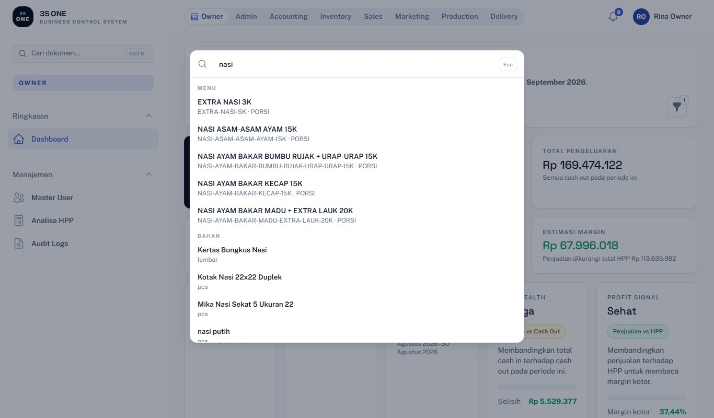
Cari dokumen (Ctrl + K): hasil muncul sambil mengetik, dikelompokkan per jenis — di sini menu dan bahan yang mengandung kata “nasi”.
Tombol dan tanda yang sering ditemui
- Simpan Isian — menyimpan apa yang Anda ketik tanpa mengubah tahap.
- Tombol tahap (Ajukan, Setujui, Periksa, Tutup SPK) — memindahkan pekerjaan ke bagian berikutnya. Ini tidak bisa dibatalkan, sistem selalu meminta konfirmasi dulu.
- Ikon di ujung baris tabel — pensil = ubah, tempat sampah (merah) = hapus. Arahkan kursor ke ikon untuk melihat namanya. Menghapus selalu meminta konfirmasi dulu.
- Menu Lainnya (⋯) — cetak PDF, buka halaman terkait, pembatalan.
- Angka merah kecil di menu kiri — jumlah hal yang menunggu ditangani.
- Tombol garis tiga (☰) di kiri atas — membuka menu kiri. Tombol ini muncul di layar kecil dan di laporan lebar (misalnya Laporan Penjualan Lihat Lengkap), yang menutup menu kiri sementara supaya tabelnya dapat seluruh layar.
Menyaring daftar dan laporan
Semua daftar dan laporan memakai cara menyaring yang sama:
- Tekan ikon corong (filter) di kanan atas tabel atau laporan. Angka kecil di ikon = jumlah filter yang sedang berlaku.
- Isi pilihan di panel yang terbuka. Untuk rentang tanggal tersedia tombol cepat Bulan Ini, Bulan Lalu, dan Tahun Berjalan.
- Tekan Terapkan filter. Atur ulang mengembalikan semua pilihan ke bawaan.
Filter yang berlaku tampil sebagai chip biru (misalnya Periode: 1 Sep 2026 – 30 Sep 2026). Tekan tanda × di chip untuk melepas satu filter saja tanpa mengubah yang lain. Kotak Cari di daftar menyaring sambil Anda mengetik.
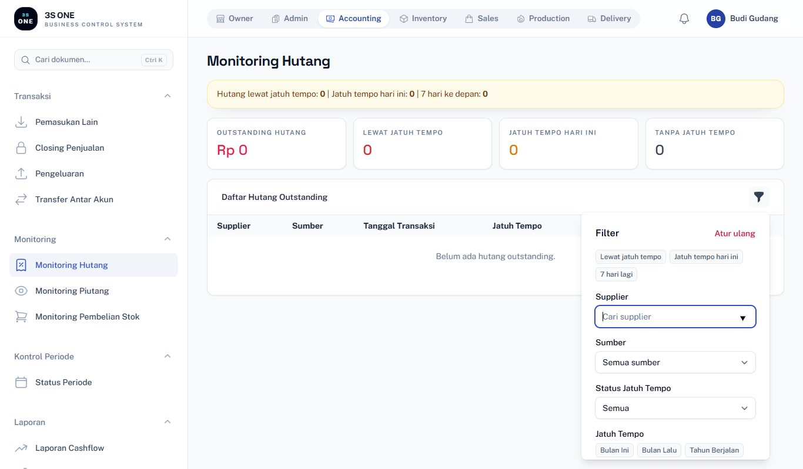
Accounting › Monitoring Hutang: ikon corong membuka panel filter; tombol cepat jatuh tempo ada di bagian atas panel.
Chip periode tanpa tanda × adalah periode bawaan halaman itu (biasanya bulan berjalan) — hanya keterangan, bukan filter yang lupa dilepas. Periode yang Anda pilih sendiri selalu bisa dilepas.
Halaman yang terkunci (kolom tidak bisa diketik) bukan rusak: artinya giliran bagian lain. Keterangan di atas tabel selalu menjelaskan siapa yang sedang memegang pekerjaan itu.
6. Aplikasi Admin, Sales, Marketing, Production, Delivery
Admin
| Menu | Untuk apa |
|---|
| Master Menu, Master Customer | Daftar menu yang dijual (dengan harga) dan daftar pelanggan. Mengubah harga jual menu mengirim lonceng ke Owner. SKU diketik sendiri (tidak dibuat otomatis) karena SKU tampil sebagai nama menu di website — tulis persis seperti yang ingin dibaca pelanggan, mis. Nasi Goreng Kampung. SKU wajib diisi dan tidak boleh sama dengan menu lain. Marketing juga bisa mengganti SKU dari Katalog Foto Menu; bila menunya tampil di website, Admin menerima lonceng. |
| Purchase Orders | Mencatat pesanan pelanggan: menu, jumlah, tanggal & jam kirim, cara bayar. |
| SPK | Mengelompokkan pesanan ke slot jadwal masak. Begitu SPK disimpan, SPK Produksi di Inventory terbentuk otomatis dan dapur bisa menyusun kebutuhan bahannya. |
| Delivery | Memantau pengiriman per pesanan. |
| Menu Tanpa HPP/OHC | Daftar menu yang belum punya resep/harga pokok — perlu dilengkapi di Inventory › Resep & Menu. |
| Laporan PO / Produksi / Delivery / Best Seller | Rekap operasional per periode. |

Admin › Purchase Orders: form PO baru di atas; daftar PO hari ini di bawahnya.

Admin › SPK: pesanan dikelompokkan ke slot jadwal masak. Menyimpan SPK otomatis membuat SPK Produksi di Inventory.
Marketing
| Menu | Untuk apa |
|---|
| Dashboard | Berapa menu aktif yang sudah punya foto, berapa yang tampil di website, dan daftar menu yang sudah tampil di website tapi belum punya foto. |
| Katalog Foto Menu | Satu foto resmi per menu untuk materi promosi. Tekan Unggah foto (atau Ganti foto) di kartu menu, pilih berkas, dan foto langsung terunggah. JPG, PNG, WEBP maks. 5 MB; sistem otomatis mengecilkannya. Centang Tampil di website untuk menu yang terbit di website — langsung tersimpan tanpa tombol Simpan. SKU menjadi nama menu di website, jadi menu tanpa SKU tidak bisa dicentang. Menu nonaktif tidak terbit walau tercentang. Ganti SKU: klik SKU di kartu (ikon pensil), ketik, lalu Enter. Admin juga bisa menggantinya dari Master Menu; bila menunya sedang tampil di website, pihak lain (admin atau marketing) menerima lonceng, dan semua penggantian tercatat di Audit Logs. Saring dengan ikon corong: foto ada/belum, tampil/tidak tampil di website. |
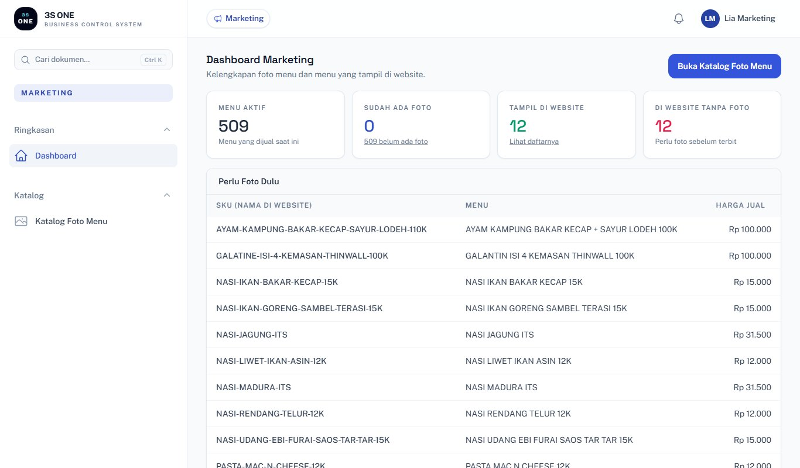
Marketing › Dashboard: jumlah menu aktif, yang sudah berfoto, yang tampil di website, dan daftar “Perlu Foto Dulu” — menu yang sudah dicentang tampil di website tetapi belum punya foto.
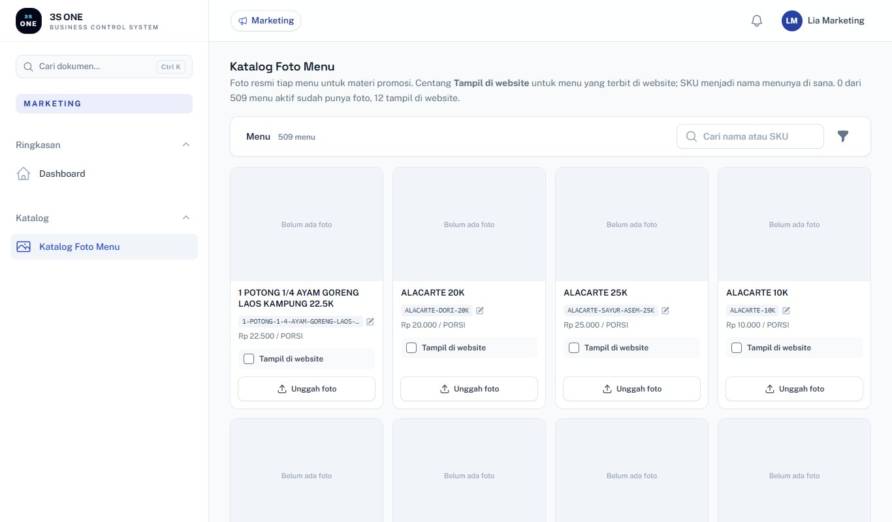
Marketing › Katalog Foto Menu: satu kartu per menu dengan SKU (ikon pensil untuk mengganti), centang Tampil di website, dan tombol Unggah foto.
Langkah menyiapkan satu menu untuk website:
- Buka Marketing › Katalog Foto Menu, cari menunya lewat kotak Cari nama atau SKU.
- Periksa SKU di kartu: inilah nama yang dibaca pelanggan di website. Kalau masih berupa kode (mis. ALACARTE-AYAM-BISTIK), klik ikon pensil, ketik nama yang enak dibaca, tekan Enter.
- Tekan Unggah foto, pilih foto. Foto dari HP boleh langsung dipakai — sistem mengecilkan dan meluruskan sendiri.
- Centang Tampil di website. Tersimpan saat itu juga, tanpa tombol Simpan.
- Kembali ke Dashboard: menu yang tampil di website tetapi belum berfoto ada di daftar Perlu Foto Dulu. Targetnya daftar itu kosong.
Sales
| Menu | Untuk apa |
|---|
| Dashboard | Penjualan hari ini dan bulan berjalan. Buka Sales Actual untuk mengisi qty yang benar-benar terjual; sisanya otomatis menjadi retur. |
| Barang Sisa | Retur dari Sales Actual yang sudah disubmit. Barang Sisa boleh dijual ke customer mana pun (tombol Jual: pilih Sales Actual draft tujuan, qty, harga) atau dibuang bila tidak layak jual (tombol Buang, alasan wajib). Rinciannya di Bab 12. |
| Laporan Sales Final & Retur | Penjualan yang benar-benar terjadi setelah retur, dan ke mana tiap retur pergi: dijual ke siapa, dibuang, atau masih di Barang Sisa. |
| Laporan Waste | Barang Sisa yang dibuang — baik yang ketahuan tidak layak saat dijual ulang, maupun yang dibuang langsung dari halaman Barang Sisa. |
| Laporan Penjualan | Rekap penjualan per periode (juga terbaca Accounting). Mode Ringkas muat satu lembar; mode Lihat Lengkap menampilkan jumlah per harga jual untuk tiap pelanggan, dipisah Lapak dan Retail, dengan subtotal per tanggal. |

Sales › Dashboard: chip menunjukkan periode dan status yang sedang ditampilkan.
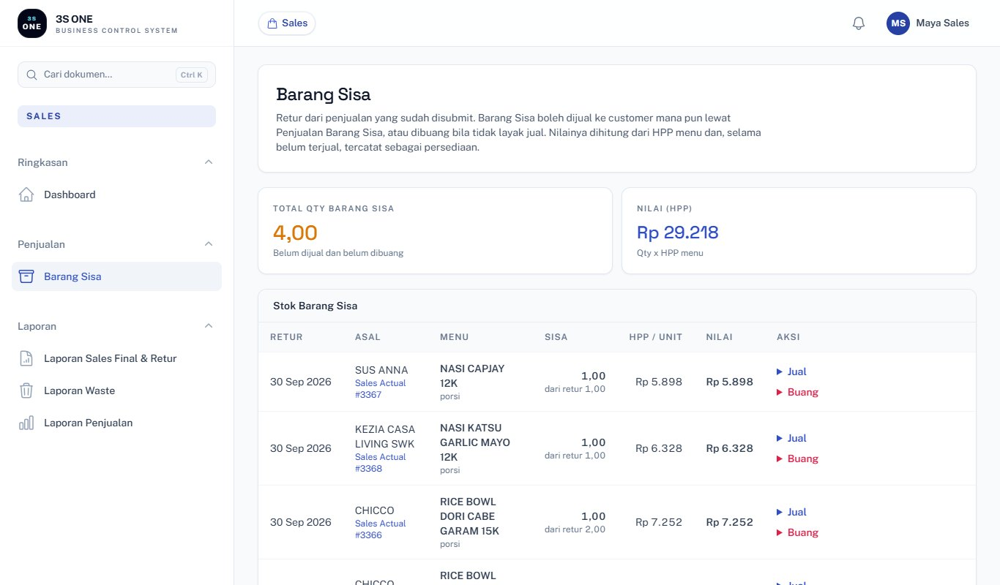
Sales › Barang Sisa: sisa tiap retur beserta nilai HPP-nya; tombol Jual membuka pilihan Sales Actual tujuan, qty, dan harga, tombol Buang mencatat yang tidak layak jual.
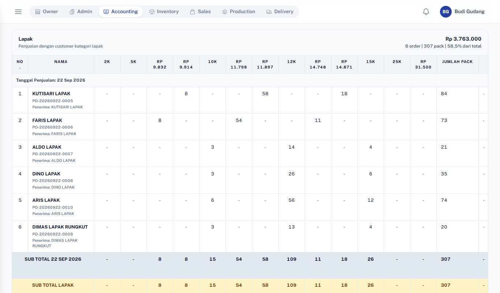
Laporan Penjualan › Lihat Lengkap: menu kiri ditutup sementara supaya tabel selebar layar; tombol ☰ di kiri atas membukanya lagi.
Kalau kolom harganya banyak (misalnya rentang seminggu), tabel Lihat Lengkap bisa digeser ke samping. Untuk mencetak atau mengolah angka, pakai Export Excel / Export PDF.
Production
| Menu | Untuk apa |
|---|
| Dashboard Produksi | Jadwal masak hari ini per SPK. Dari sini ada tombol ke Form Kebutuhan di Inventory (Bab 9). |

Production › Dashboard Produksi: jadwal masak per SPK, dengan tautan ke Form Kebutuhan.
Delivery
| Menu | Untuk apa |
|---|
| Dashboard Pengiriman | Daftar kiriman, status, dan bukti kirim (foto/penerima). |

Delivery › Dashboard Pengiriman.
7. Aplikasi Accounting
Urutan pakainya dari atas ke bawah: siapkan master & saldo awal sekali, catat transaksi setiap hari, pantau, tutup periode, lalu baca laporan.
| Kelompok / Menu | Untuk apa |
|---|
Master Data
Akun Kas, Kategori Pemasukan, Kategori Pengeluaran | Daftar rekening/kas dan jenis-jenis pemasukan & pengeluaran. Kategori bertipe Pembelian Stok dipakai otomatis saat gudang menerima bahan. |
Setup Awal
Saldo Awal, Adjustment Neraca, Adjustment Laba Rugi | Diisi sekali di awal (atau saat koreksi): saldo kas awal dan penyesuaian angka laporan. |
Transaksi
Pemasukan Lain, Closing Penjualan, Pengeluaran, Transfer Antar Akun | Catatan uang masuk/keluar harian. Pembelian bahan lewat Form Kebutuhan tidak perlu dicatat lagi di sini — sudah otomatis (Bab 10); Pengeluaran dipakai untuk belanja di luar form. |
Monitoring
Hutang, Piutang, Pembelian Stok | Siapa belum dibayar / belum membayar, dan rekap pembelian bahan. Hutang ke supplier tertaut ke Master Supplier (Bab 8). |
Kontrol Periode
Status Periode | Menutup buku bulanan. Setelah ditutup, transaksi bulan itu terkunci; perubahan hanya lewat penyesuaian yang tercatat. |
Laporan
Cashflow, Penjualan, Laba Rugi, Neraca, Pemakaian Bahan, Laporan Final | Laporan keuangan per periode; bisa diekspor Excel/PDF. |

Accounting › Laporan Cashflow: sisi Debet (uang masuk) dan Kredit (uang keluar) berdampingan.
Membaca Laporan Laba Rugi
Blok atas Laba Rugi menghitung Bahan Baku Terpakai dari Bahan Baku Lama + Bahan Baku Baru − Sisa Stok, ditambah/dikurangi Barang Sisa Awal dan Akhir. Di bawahnya ada rincian yang sudah termasuk di angka itu (Barang Hilang, Barang Temuan, Barang Sisa Dibuang). Supaya laporan tetap ringkas, rincian ini tertutup dulu:
- Cari baris Bahan Baku Terpakai. Kalau bulan itu ada rinciannya, di sebelah tulisannya muncul tombol kecil Lihat rincian.
- Klik barisnya (di mana saja pada baris itu). Rincian “termasuk …” terbuka di bawahnya dan tombolnya berubah menjadi Tutup rincian.
- Klik sekali lagi untuk menutup. Hal yang sama berlaku di Laporan Final.
Tidak ada tombol berarti bulan itu tidak ada Barang Hilang, Temuan, maupun Barang Sisa yang dibuang. Di Export PDF/Excel rincian selalu tercetak, karena kertas tidak bisa diklik.
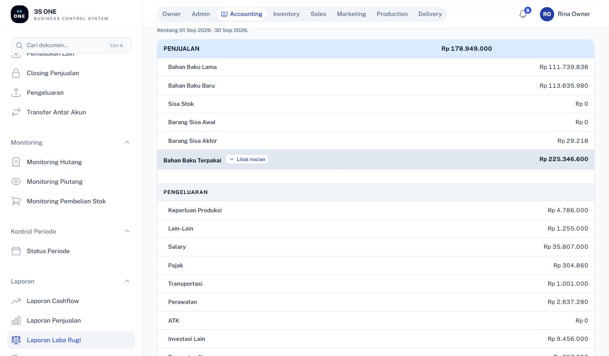
Laba Rugi: rincian tertutup. Tombol “Lihat rincian” di baris Bahan Baku Terpakai menandakan ada rincian di dalamnya.
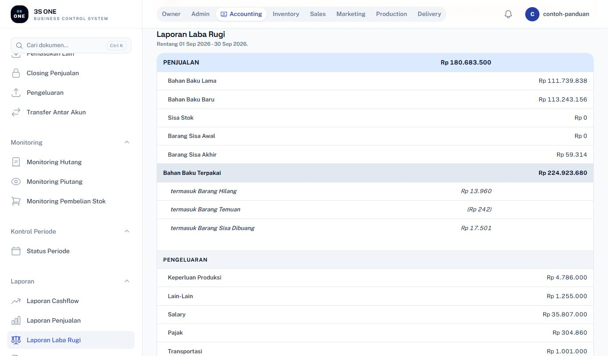
Setelah baris diklik: rincian Barang Hilang, Barang Temuan (angka dalam kurung = mengurangi), dan Barang Sisa Dibuang. Klik lagi untuk menutup.
Hubungan dengan Inventory
- Laporan Pemakaian Bahan dan angka Bahan Baku Terpakai di Laba Rugi berasal dari Inventory (Bab 11).
- Barang datang rusak tetapi tetap dibayar masuk pos Kerugian Barang Rusak di Laba Rugi, bukan ke stok.
- Barang Hilang dan Barang Temuan tampil sebagai rincian di bawah Bahan Baku Terpakai (“termasuk …”). Nilainya sudah ada di Bahan Baku Terpakai, jadi tidak mengubah Laba — dan terpisah dari Kerugian Barang Rusak.
- Nilai persediaan di Neraca mengikuti stock opname terakhir, ditambah Barang Sisa (retur yang belum terjual) yang dinilai sebesar HPP menunya. Di Laba Rugi muncul sebagai Barang Sisa Awal dan Barang Sisa Akhir (Bab 12).
- Kolom Supplier di Pengeluaran, Saldo Awal (hutang), dan Pembelian Stok menyarankan nama dari Master Supplier saat Anda mengetik. Pilih dari saran supaya satu supplier tidak tercatat dengan dua ejaan.
8. Aplikasi Inventory
Inilah "dapur data" untuk bahan baku. Menu dibagi tiga kelompok.
Kelompok Inventory (data bahan & stok)
| Menu | Untuk apa |
|---|
| Dashboard | Ringkasan: bahan di bawah stok minimum, antrean form yang menunggu Anda, SPK terdekat, perubahan harga terakhir. |
| Item Inventaris | Daftar bahan (nama, satuan, harga per satuan, stok minimum). Setiap perubahan harga tersimpan di Histori Harga. Tombol Export Riwayat Harga mengunduh seluruh histori harga semua bahan ke Excel; Import Excel untuk mengisi atau memperbarui banyak bahan sekaligus. |
| Master Supplier | Daftar pemasok bahan baku: nama, kontak, telepon, rekening, termin bayar (hari), dan bahan yang dipasok. Halaman supplier juga menampilkan riwayat pembeliannya. Supplier yang sudah punya transaksi tidak bisa dihapus — nonaktifkan saja. |
| Pembelian Bahan Baku | Rekap pembelian bahan beserta supplier dan kondisi barang (Baik / Tidak Baik). Sebagian besar terisi otomatis dari Form Kebutuhan. Untuk pembelian kredit, jatuh tempo yang dikosongkan diisi dari termin bayar supplier. |
| Stock Opname | Hasil hitung fisik stok per periode dalam rupiah per kategori; menjadi dasar nilai persediaan di Neraca. |
| Opname Bahan | Hitung fisik per bahan dalam kuantitas (kg, liter, butir) kapan saja. Isi hasil hitung pada bahan yang diopname; selisih terhadap Kartu Stok otomatis tercatat sebagai Barang Hilang (hitung kurang) atau Barang Temuan (hitung lebih). Bahan yang belum pernah tercatat di Kartu Stok: hitungan pertamanya menjadi saldo awal. Tidak menggantikan Stock Opname bulanan. |
| Saldo Awal Stok | Nilai stok awal periode. |
| Pengaturan Inventory | Angka bawaan: % OHC dan profit resep, sumber angka HPP, pembulatan belanja, perlakuan barang ditolak, batas bawah/atas profit menu, batas warna susut bahan, tanggal mulai Barang Sisa dihitung persediaan, rentang laporan menu tidak diproduksi, penomoran dokumen. Hanya Owner. |

Inventory › Dashboard: bahan di bawah stok minimum, antrean form yang menunggu Anda, SPK terdekat, perubahan harga.

Inventory › Item Inventaris: daftar bahan beserta harga per satuan, muat satu layar; ikon pensil dan tempat sampah di ujung baris.
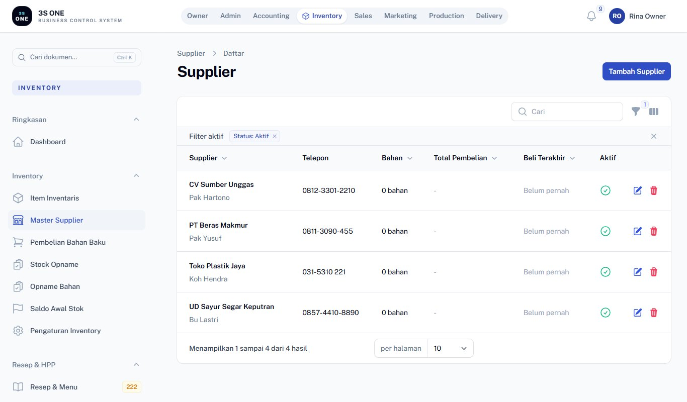
Inventory › Master Supplier: kontak, jumlah bahan yang dipasok, total dan tanggal pembelian terakhir.
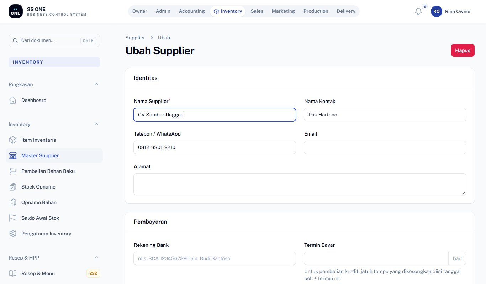
Ubah Supplier: identitas, lalu rekening bank dan termin bayar; termin mengisi jatuh tempo pembelian kredit.

Inventory › Opname Bahan: ketik hasil hitung fisik; kolom Selisih langsung menunjukkan Hilang (merah) atau Temuan. Bahan yang belum tercatat di kartu stok menjadi saldo awal.
Kelompok Resep & HPP
| Menu | Untuk apa |
|---|
| Resep & Menu | Resep tiap menu: bahan, takaran, hasil (porsi). Daftarnya langsung menampilkan HPP / hasil, HPP + OHC, Harga Jual, Profit % dan Status Hitungan (Lengkap atau Belum Lengkap bila ada baris yang belum tertaut). Tab di atas memisahkan Menu Utama, Sub-Menu, yang belum dipetakan, dan yang bahannya belum tertaut. Saringan (ikon corong): Kategori dan Profit di bawah target. Tombol Export Daftar Menu mengunduh daftar itu ke Excel. Di dalam resep, baris yang belum bisa ditautkan ke bahan boleh diberi Harga Manual / Satuan supaya biayanya tetap terhitung. Dari sini tombol Analisa HPP menghitung harga pokok, OHC, profit, dan harga jual. |
| Pencocokan Menu | Daftar kerja menautkan menu di Master Menu (Admin) ke resepnya, diurutkan dari yang paling laku 90 hari terakhir. Tiap baris punya tiga jalan keluar: Tautkan ke resep yang ada, Buat Resep, atau Tanpa Resep (mis. minuman kemasan). Bisa dikerjakan lewat Excel (export, isi, import). |
| Konversi Satuan | Aturan mengubah satuan resep ke satuan harga (mis. 1 kg = 16 butir). Tanpa aturan ini, biaya baris resep dihitung nol — halaman Konversi yang Belum Diatur menunjukkan mana yang kurang. |
| Bahan Belum Cocok | Nama bahan di resep yang belum terhubung ke daftar bahan. Tautkan, buat baru, atau abaikan. |
| Perbandingan HPP | Membandingkan HPP menurut resep × produksi dengan HPP menurut opname, per periode. Dasar Owner memutuskan sumber HPP mana yang dipakai laporan. |
| Susut Bahan | Indikator per bahan: hijau (susut di bawah 1%), kuning (1–10%), merah (di atas 10%). Klik sebuah bahan untuk melihat SPK dan menu yang memakainya — di situlah susutnya bisa dilacak. Cara hitungnya di Bab 12. |
| Pekerjaan Menu | Template pembagian kerja dapur per menu (mis. “goreng ayam”, “siapkan sambal”). Tekan ikon pensil untuk mengatur pekerjaan sebuah menu. Template ini disalin ke Lembar Kerja setiap SPK Produksi, jadi cukup diatur sekali. Bisa diisi lewat Excel (Export Excel, isi, Import Excel). |
| Menu Tidak Diproduksi | Menu aktif yang tidak pernah masuk SPK Produksi dalam rentang yang dipilih (bawaan 3 bulan terakhir), beserta kapan terakhir diproduksi dan terakhir terjual. Bahan evaluasi: dihentikan, dipromosikan ulang, atau sekadar belum punya resep. Bisa diekspor Excel. |

Resep & Menu › Analisa HPP: HPP per porsi, OHC, profit, harga jual; baris yang menahan perhitungan dilipat di bawahnya.

Konversi Satuan › Belum Diatur: pasangan satuan yang perlu aturan supaya biaya resep terhitung.

Resep & Menu: HPP, HPP + OHC, harga jual, Profit %, dan Status Hitungan per resep; tab di atas dan ikon corong untuk menyaring, Export Daftar Menu di kanan atas.
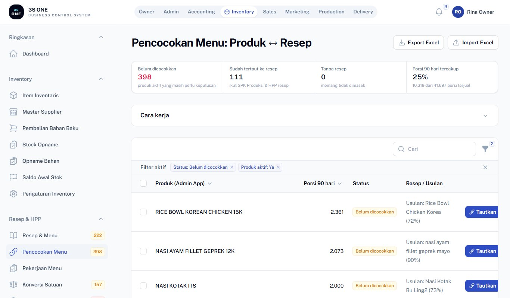
Pencocokan Menu: menu di Admin yang belum tertaut ke resep, diurutkan dari yang paling laku; tombol Tautkan memakai usulan resep dengan skor kemiripannya.
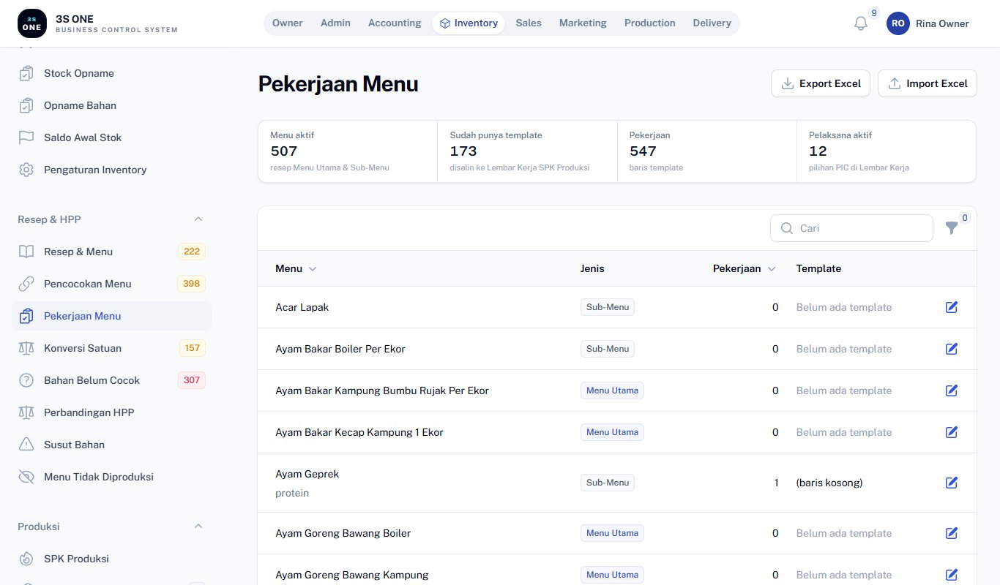
Pekerjaan Menu: template pembagian kerja per menu yang disalin ke Lembar Kerja setiap SPK Produksi.
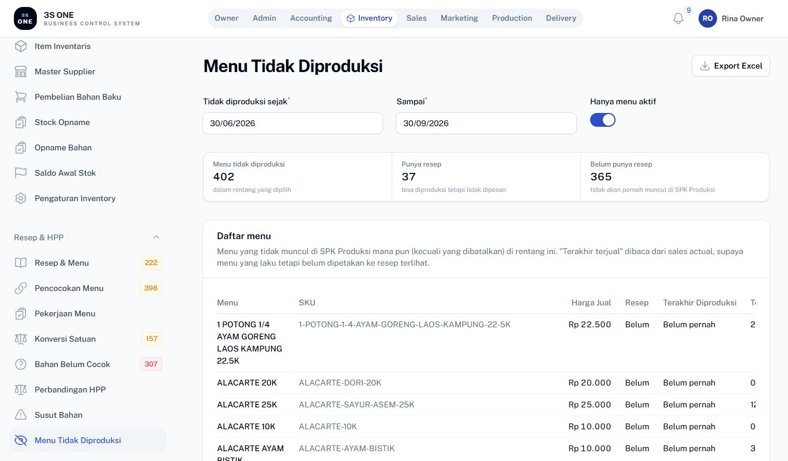
Menu Tidak Diproduksi: menu aktif yang tidak muncul di SPK Produksi dalam rentang yang dipilih, beserta kapan terakhir diproduksi dan terjual.
Kelompok Produksi
| Menu | Untuk apa |
|---|
| SPK Produksi | Jadwal masak dari SPK admin: menu & jumlah. Dari halamannya ada:
• Form Kebutuhan — daftar belanja & stok (Bab 9).
• Breakdown Bahan — semua menu di SPK dipecah sampai bahan mentah (sub-resep ikut diurai), direkap per bahan, dan dicocokkan dengan stok di Kartu Stok: kolom Perlu Beli = kebutuhan − stok sistem. Menu yang belum punya resep disebutkan di kotak kuning — tautkan resepnya di Pencocokan Menu. Bisa Export Excel.
• Lembar Kerja (menu Lainnya) — pembagian tugas dapur: Salin dari Template Menu mengisi dari Pekerjaan Menu, lalu tentukan pelaksana dan centang yang selesai; Export Excel untuk ditempel di dapur.
• Plating (menu Lainnya) — komponen isi piring tiap menu (kuah, lauk, nasi, kemasan) dengan jumlah porsinya; Komponen per Menu, Cetak Plating (PDF), dan Export Excel. |
| Form Kebutuhan | Daftar semua form beserta statusnya. Alur lengkapnya di Bab 9. |
| Kartu Stok | Catatan keluar-masuk tiap bahan (saldo awal, pembelian, pemakaian, Barang Hilang, Barang Temuan). Hanya dibaca — terisi otomatis dari form, Tutup SPK, dan Opname Bahan. |
| Pelaksana | Daftar orang dapur untuk lembar kerja. |

SPK Produksi: data SPK di atas; tombol Form Kebutuhan, Breakdown Bahan, dan menu Lainnya untuk Lembar Kerja, Plating, dan cetak.

Breakdown Bahan: ringkasan porsi yang terhitung, bahan dibutuhkan, dan yang perlu dibeli; kotak kuning menyebut menu yang belum punya resep; tabel rekap bahan & stok di bawahnya.

Lembar Kerja: pembagian tugas dapur per SPK. “Salin dari Template Menu” mengisinya dari Pekerjaan Menu.

Plating: komponen isi piring per menu beserta jumlah porsi; Cetak Plating untuk PDF, Export Excel untuk diolah.

Kartu Stok: keluar-masuk tiap bahan dengan saldo berjalan — terisi otomatis. Label oranye = Barang Hilang, biru = Barang Temuan.

Pembelian Bahan Baku: catatan pembelian beserta kondisi Baik / Tidak Baik dan nilai barang rusak.
9. Form Kebutuhan: dari dapur sampai barang datang
Form Kebutuhan menggantikan form kertas "Kebutuhan, Stok & Pembelian Barang". Satu form untuk satu SPK Produksi. Pekerjaannya berpindah meja — tiap meja hanya melihat tombol untuk bagiannya.
Meja 1 · Produksi
1. Buka SPK Produksi › Form Kebutuhan
2. Susun Form (kebutuhan dihitung dari resep × jumlah menu)
3. Isi Stok Awal hasil hitung fisik dapur → Beli terhitung sendiri
4. Simpan
5. Ajukan ke Supervisor Gudang

Meja 1 (Produksi): isi Stok Awal, Beli terhitung sendiri, lalu Ajukan ke Supervisor Gudang.
↓
Meja 2 · Supervisor Gudang
Terima lonceng "menunggu persetujuan"
Periksa angka Stok Awal, Beli, perkiraan biaya
Setujui
atau Tolak + alasan → form kembali ke Meja 1 dengan catatan merah

Lonceng di pojok kanan atas: supervisor gudang menerima pemberitahuan form yang menunggu, dengan tombol Buka form.

Meja 2 (Supervisor Gudang): hanya tombol Setujui / Tolak; tabel memuat harga master dan perkiraan biaya per bahan.
↓
Meja 3 · Staf Gudang (saat barang datang)
Terima lonceng "siap dibelanjakan"
Isi Diterima, alasan barang Ditolak, Harga Beli dari nota
Pilih cara bayar: Tunai (akun kas) / Kredit (supplier)
Simpan
Periksa

Meja 3 (Staf Gudang): cara pembayaran di atas, lalu per bahan Diterima, Ditolak (otomatis), alasan, perlakuan, dan harga beli.
↓
Meja 4 · Produksi (setelah masak)
Terima lonceng "barang sudah masuk"
Isi Pemakaian Aktual & Sisa Stok (kalau dihitung)
Tutup SPK
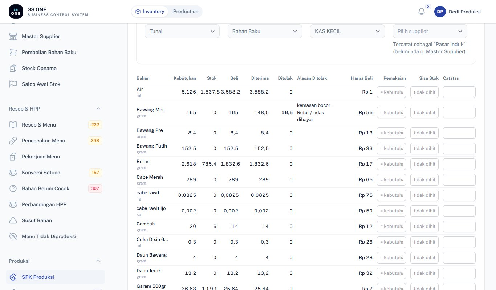
Meja 4 (Produksi): setelah form diperiksa, kolom Pemakaian dan Sisa Stok terbuka di ujung kanan tabel. Kosong = ikut resep / tidak dihitung.
| Kolom | Kalau dikosongkan | Kalau diisi |
|---|
| Pemakaian | Dianggap sama dengan Kebutuhan resep. | Angka ini yang keluar dari Kartu Stok. Lebih besar dari resep = lebih pakai, ikut dihitung di Susut Bahan. |
| Sisa Stok | Tidak dihitung; stok mengikuti perhitungan sistem. | Hasil hitung fisik sisa bahan setelah masak. Sistem membandingkannya dengan saldo Kartu Stok: kurang = Barang Hilang, lebih = Barang Temuan (Bab 12). |
Status form dan artinya
| Status | Artinya | Yang bisa bertindak |
|---|
| Dibuat / Diisi | Masih disusun dapur. | Produksi |
| Diajukan | Menunggu keputusan supervisor gudang. Terkunci. | Supervisor Gudang (Owner/Admin sebagai cadangan) |
| Disetujui | Gudang belanja / menunggu barang datang. | Staf Gudang / Supervisor / Accounting |
| Diperiksa | Barang sudah masuk stok. Menunggu dapur menutup SPK. | Produksi |
Tidak bisa diulang: Periksa dan Tutup SPK menulis ke kartu stok dan buku kas. Kalau ada salah setelah itu, perbaikannya lewat Accounting (koreksi pembelian) atau Opname Bahan — bukan dengan mengulang tombolnya.
10. Barang datang: diterima, ditolak, harganya
Di tahap Disetujui, staf gudang mengisi tabel bahan seperti ini untuk tiap baris:
| Kolom | Isi dengan |
|---|
| Diterima | Jumlah yang layak masuk gudang. Kosong = sama dengan Beli. |
| Ditolak | Terhitung sendiri = Beli − Diterima. Tidak bisa diketik, supaya tidak ada barang yang "hilang" di antara keduanya. |
| Alasan Ditolak | Wajib kalau ada yang ditolak (busuk, kemasan rusak, salah kirim, ...). |
| Perlakuan | Retur / tidak dibayar (bawaan) — barang dikembalikan, tidak ada biaya. Dibayar — tetap dibayar; nilainya masuk Kerugian Barang Rusak. |
| Harga Beli | Harga per satuan dari nota. Kosong = memakai harga master bahan. |
| Cara bayar (di atas tabel) | Tunai: pilih kategori & akun kas. Kredit: pilih supplier dari Master Supplier (supplier baru bisa ditambahkan langsung dari pilihan itu); jatuh tempo yang dikosongkan terisi dari termin bayar supplier. |
Yang terjadi otomatis saat tombol Periksa ditekan
| PeriksaStaf gudang |
→ |
Kartu Stok+ Diterima × Harga Beli
Pembelian Bahan Bakusatu catatan per bahan
Kas keluar / Hutangsesuai cara bayar
Kerugian Barang Rusakhanya bila ditolak-Dibayar
Harga master bahanikut harga beli + histori
|
Contoh
Beli 20 kg ayam. Datang 18 kg bagus, 2 kg busuk dikembalikan ke supplier. Nota Rp 38.000/kg, tunai dari Kas Kecil.
- Diterima 18, Ditolak 2 (otomatis), alasan busuk, perlakuan Retur, harga beli 38.000.
- Setelah Periksa: stok ayam +18 kg; Pembelian Bahan Baku Rp 684.000 (Baik); Kas Kecil −Rp 684.000; tidak ada kerugian; harga master ayam menjadi Rp 38.000.
- Kalau supplier tidak mau menerima retur dan tetap menagih 20 kg: pilih perlakuan Dibayar → Kas Kecil −Rp 760.000, dan Rp 76.000 tercatat sebagai Kerugian Barang Rusak.
Sistem menolak Periksa kalau masih ada barang ditolak tanpa alasan, harga beli kosong, atau cara bayar belum dipilih — pesannya menyebut persis apa yang kurang.
11. Dari mana angka HPP dan stok berasal
Supaya angka di laporan bisa dipercaya, tiap angka punya satu sumber:
| Angka | Sumbernya |
|---|
| Harga bahan | Item Inventaris (harga per satuan). Berubah lewat: edit manual, import, atau harga beli di Form Kebutuhan. Semua perubahan tersimpan di Histori Harga. |
| HPP satu menu | Resep (bahan × takaran × harga bahan) + OHC % + profit % → harga jual hitungan. Lihat Analisa HPP. |
| Stok bahan | Kartu Stok: saldo awal + pembelian − pemakaian − Barang Hilang + Barang Temuan. Terisi dari Form Kebutuhan, Tutup SPK, dan Opname Bahan — bukan diketik. |
| Barang Hilang / Barang Temuan | Selisih hitung fisik (Sisa Stok saat Tutup SPK, atau Opname Bahan) terhadap Kartu Stok. Tampil di Susut Bahan dan sebagai rincian HPP di Laba Rugi. |
| Bahan Baku Terpakai (Laba Rugi) & Laporan Pemakaian Bahan | Dua cara hitung: Residual opname (Saldo Awal + Beli − Sisa) atau Resep × produksi (dari kartu stok). Mana yang dipakai diatur Owner di Pengaturan Inventory setelah Perbandingan HPP beberapa periode dianggap cocok. |
| Nilai persediaan (Neraca) | Stock Opname terakhir + Barang Sisa yang belum terjual (qty × HPP menu). |
Kenapa HPP bisa berubah sendiri?
Karena harga bahan berubah — biasanya setelah gudang mencatat harga beli baru di Form Kebutuhan. Buka Item Inventaris › Histori Harga untuk melihat kapan, dari berapa ke berapa, dan dari form mana. Kalau harga itu keliru, perbaiki harga bahannya; HPP menu ikut.
Peringatan stok minimum
Bahan yang diberi stok minimum di Item Inventaris akan muncul di Dashboard Inventory (dan lonceng sekali sehari) begitu nilainya di bawah batas.
12. Susut, Barang Hilang, dan Barang Sisa
Tiga hal ini menjawab pertanyaan yang sama: ke mana perginya barang yang tidak terjual atau tidak terpakai sesuai resep? Dulu semuanya tersembunyi di dalam angka HPP; sekarang masing-masing punya namanya sendiri.
Peta singkat: kejadian apa, dicatat di mana
| Kejadian | Dicatat di | Muncul di laporan sebagai |
|---|
| Sisa bahan setelah masak ternyata kurang / lebih dari catatan | Kolom Sisa Stok saat Tutup SPK (Bab 9) | Barang Hilang / Barang Temuan |
| Hitung fisik gudang di luar SPK (mingguan, akhir bulan) | Inventory › Opname Bahan | Barang Hilang / Barang Temuan |
| Dapur memakai lebih banyak dari resep | Kolom Pemakaian saat Tutup SPK | “Lebih pakai” di Susut Bahan |
| Porsi terkirim tetapi tidak terjual (retur) | Otomatis saat Sales Actual disubmit | Barang Sisa (persediaan) |
| Barang Sisa dijual ke customer lain | Sales › Barang Sisa › Jual atau panel di Sales Actual | Penjualan biasa; HPP-nya pindah ke bulan terjual |
| Barang Sisa tidak layak jual | Sales › Barang Sisa › Buang | Barang Sisa Dibuang (rincian HPP) & Laporan Waste |
| Barang datang rusak tetapi tetap dibayar | Form Kebutuhan, perlakuan Dibayar (Bab 10) | Kerugian Barang Rusak (Pengeluaran) |
Barang Hilang dan Barang Temuan
Setiap kali stok dihitung fisik — kolom Sisa Stok saat Tutup SPK, atau halaman Inventory › Opname Bahan — hasilnya dibandingkan dengan saldo Kartu Stok:
| Hasil hitung | Tercatat sebagai |
|---|
| Lebih sedikit dari Kartu Stok | Barang Hilang sebesar selisihnya |
| Lebih banyak dari Kartu Stok | Barang Temuan sebesar selisihnya |
| Sama | Tidak ada catatan |
Langkah Opname Bahan (hitung fisik di gudang):
- Hitung fisik bahan di gudang. Tidak perlu semua sekaligus — boleh satu rak atau satu kategori.
- Buka Inventory › Opname Bahan. Isi Tanggal opname (hari penghitungan, bukan hari ini bila berbeda) dan, bila perlu, Catatan (mis. opname akhir bulan).
- Persempit daftar lewat Kategori atau Cari bahan.
- Ketik hasil hitung di kolom Hitung Fisik. Kolom Selisih langsung memberi tahu hasilnya: Hilang (merah), Temuan, atau Saldo awal untuk bahan yang belum pernah tercatat. Bahan yang tidak dihitung biarkan kosong — tidak diubah.
- Tekan Simpan di bawah tabel. Hasilnya langsung tercatat di Kartu Stok dengan label Barang Hilang / Barang Temuan.
Opname Bahan: setelah hasil hitung diketik, kolom Selisih menunjukkan Temuan, Hilang, atau Saldo awal (bahan yang belum pernah tercatat).
Kartu Stok setelah opname dan Tutup SPK: baris Barang Hilang (oranye, qty merah) dan Barang Temuan (biru) dengan nilai rupiahnya dan saldo s/d tanggal.
Contoh Opname Bahan: Kartu Stok bawang merah 121 gram. Dihitung ternyata 160 gram → Temuan 39 gram. Kalau dihitung 100 gram → Hilang 21 gram. Setelah disimpan, saldo Kartu Stok menjadi angka hitungan itu.
Di Laba Rugi keduanya tampil sebagai rincian di bawah Bahan Baku Terpakai (“termasuk Barang Hilang …”). Nilainya memang sudah termasuk di Bahan Baku Terpakai, jadi rincian ini tidak mengubah Laba — ia hanya menunjukkan berapa bagian HPP yang bukan pemakaian masak. Barang Hilang berbeda dengan Kerugian Barang Rusak (barang datang rusak tetapi tetap dibayar), yang tetap ada di Pengeluaran.
Contoh: beli 1 kg ayam untuk dipotong 12. Potongan terakhir kecil, sehingga saat sisa stok dihitung, ayam tinggal 0,5 kg padahal menurut kartu stok seharusnya 1 kg. Selisih 0,5 kg tercatat sebagai Barang Hilang. Kalau bulan berikutnya ada ayam yang ternyata masih tersimpan dan terhitung lebih, itu Barang Temuan.
Susut Bahan: hijau, kuning, merah
Halaman Inventory › Susut Bahan merangkum semua itu per bahan untuk periode yang dipilih (hanya SPK Produksi yang sudah ditutup):
Susut = (pemakaian lebih dari resep + Barang Hilang − Barang Temuan) ÷ kebutuhan resep
| Warna | Susut | Artinya |
|---|
| Hijau | di bawah 1% | Wajar. |
| Kuning | 1% – 10% | Perlu diperhatikan; bandingkan dengan bulan lalu. |
| Merah | di atas 10% | Telusuri. Bahan merah selalu tampil paling atas. |
Batas 1% dan 10% bisa diubah Owner di Pengaturan Inventory. Klik sebuah bahan untuk melihat ke mana susutnya pergi: tiap SPK yang memakainya (resep, aktual, hilang, temuan) dan menu apa saja yang memakai bahan itu, lengkap dengan bagian susut per menu (dibagi menurut takaran resepnya — perkiraan, karena dapur mencatat pemakaian per bahan, bukan per menu).
Langkah membaca Susut Bahan: pilih rentang Dari–Sampai; lihat kotak ringkasan (jumlah merah, kuning, hijau, dan nilai susut); mulai dari bahan merah paling atas; klik namanya dan baca bagian Ke mana susut … pergi di bawah tabel: per SPK (resep, aktual, hilang, temuan) dan hasil Opname Bahan.
Susut hanya bisa dilacak kalau dapur mengisi Pemakaian Aktual dan/atau Sisa Stok sebelum Tutup SPK, dan gudang melakukan Opname Bahan secara berkala. Tanpa hitungan fisik, sistem tidak tahu ada barang yang hilang.

Inventory › Susut Bahan: ringkasan merah/kuning/hijau dan nilai susut, lalu rincian per bahan; bahan merah paling atas.
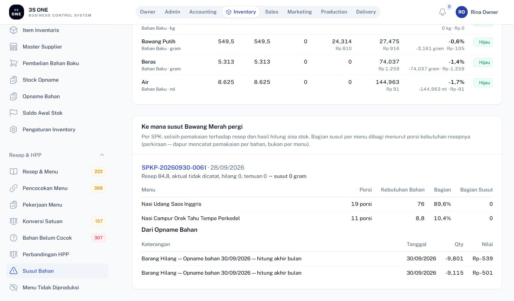
Setelah bahan diklik: “Ke mana susut Bawang Merah pergi” — per SPK dengan menu yang memakainya (porsi, kebutuhan, bagian), lalu catatan dari Opname Bahan.
Barang Sisa (retur penjualan)
Saat Sales Actual disubmit, qty yang tidak terjual menjadi retur dan masuk Sales › Barang Sisa. Retur tidak lagi otomatis dibuatkan draft untuk customer yang sama besok; Barang Sisa boleh dijual ke customer mana pun.
| Ingin | Caranya |
|---|
| Menjual Barang Sisa bersama penjualan hari ini | Buka Sales Actual customer pembeli (yang masih draft) › panel Penjualan Barang Sisa: pilih Barang Sisa, qty, dan harga, lalu Tambahkan. Barisnya ikut tabel, isi qty terjual, lalu submit seperti biasa. |
| Menjual dari halaman Barang Sisa | Sales › Barang Sisa › Jual pada baris menunya: pilih Sales Actual draft tujuan (customer & tanggal), qty, harga. |
| Salah menambahkan | Di Sales Actual yang masih draft, tekan Lepas dari Sales Actual ini pada baris Barang Sisa; qty-nya kembali ke stok Barang Sisa. |
| Membuang yang tidak layak jual | Sales › Barang Sisa › Buang: isi qty, tanggal, dan alasan (wajib). Atau, bila baru ketahuan saat dijual ulang, isi kolom Qty Waste pada barisnya. |
- Cara bayar Penjualan Barang Sisa mengikuti PO customer pembeli di DO-nya (tunai ke akun kasnya, atau piutang). Karena itu Barang Sisa hanya bisa dijual lewat Sales Actual yang berasal dari DO — kecuali dijual kembali ke customer asal returnya.
- Satu retur boleh dipecah ke beberapa customer. Barang Sisa yang sudah ditambahkan ke draft langsung dikunci, jadi tidak bisa terjual dua kali.
- Barang Sisa tidak punya batas umur; biasanya terjual keesokan harinya.
Langkah menjual dari halaman Barang Sisa:
- Buka Sales › Barang Sisa. Tiap baris = satu retur: tanggal, asal (customer & nomor Sales Actual), menu, sisa yang masih ada, HPP per porsi, dan nilainya.
- Tekan ▸ Jual pada menunya. Pilih Sales Actual tujuan (draft) — customer & tanggal pembeli — lalu isi Qty dan Harga (terisi harga lama, boleh diubah).
- Tekan Tambahkan ke Sales Actual. Anda dibawa ke Sales Actual pembeli; baris Barang Sisa sudah ada di tabelnya.
- Isi qty yang benar-benar terjual seperti biasa, lalu Submit Sales Actual. Kalau tidak habis, sisanya kembali menjadi Barang Sisa.
Sales › Barang Sisa: total qty dan nilai (HPP) di atas; tiap retur dengan asal, menu, sisa, HPP per porsi, dan tombol Jual / Buang.
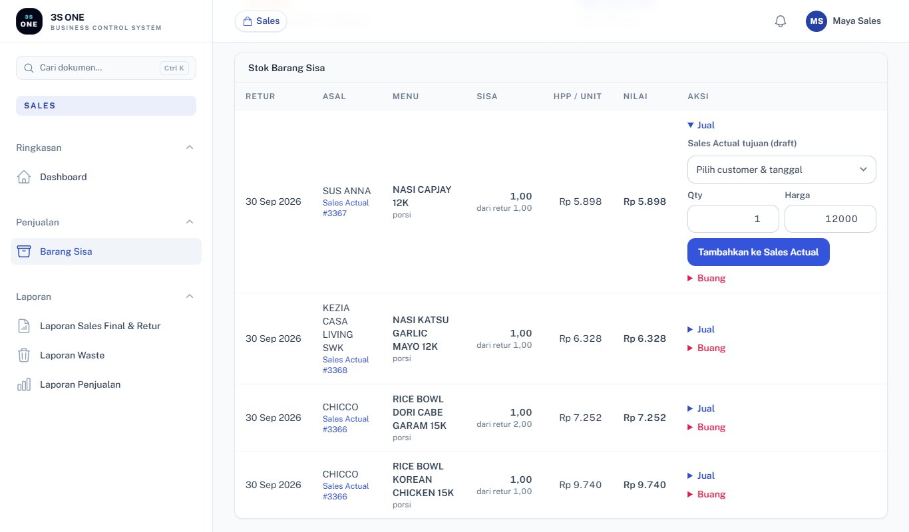
Tombol ▸ Jual terbuka: pilih Sales Actual tujuan (draft), qty, dan harga, lalu Tambahkan ke Sales Actual.
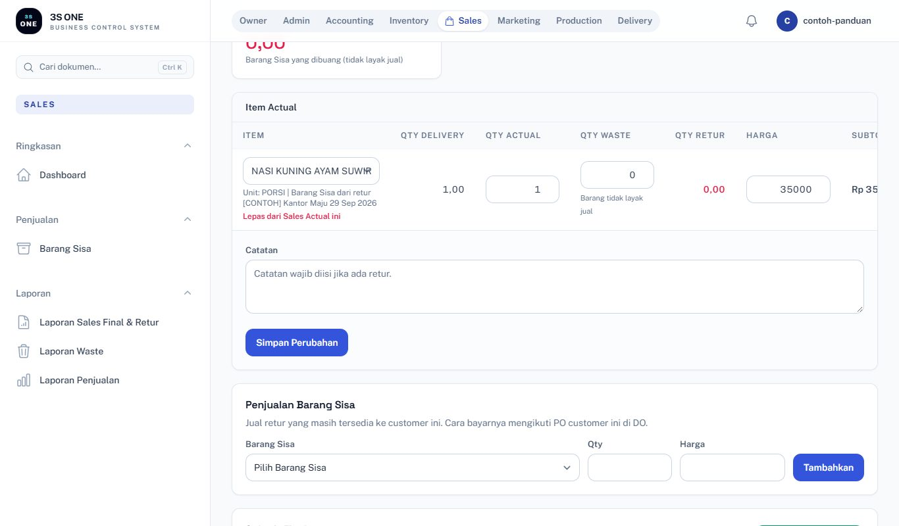
Di Sales Actual pembeli: baris Barang Sisa menyebut asal returnya dan punya tautan merah “Lepas dari Sales Actual ini”; panel Penjualan Barang Sisa di bawahnya untuk menambah yang lain.
Langkah membuang Barang Sisa yang tidak layak jual:
- Di Sales › Barang Sisa, tekan ▸ Buang pada menunya.
- Isi Qty, Tanggal dibuang, dan Alasan (wajib, mis. basi, tumpah saat dikemas).
- Tekan Catat Dibuang. Qty itu keluar dari stok Barang Sisa dan masuk Laporan Waste; nilainya muncul sebagai “termasuk Barang Sisa Dibuang” di Laba Rugi.
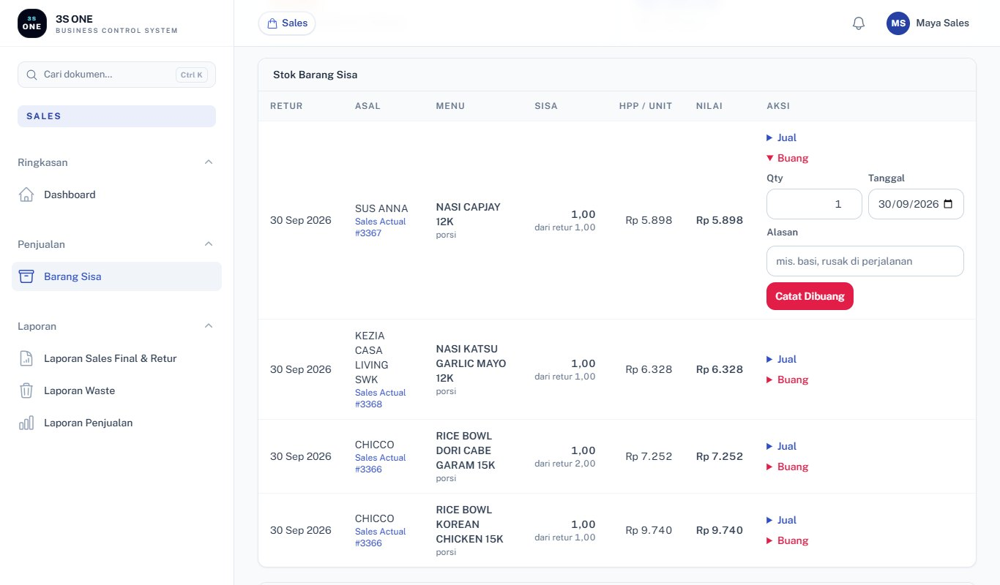
Tombol ▸ Buang terbuka: qty, tanggal, dan alasan wajib, lalu Catat Dibuang.
Memantau: Laporan Sales Final & Retur menunjukkan tiap Sales Actual yang disubmit beserta qty returnya dan ke mana retur itu pergi (dijual ke siapa, dibuang, atau masih tersisa); Laporan Waste merinci yang dibuang beserta nilai cost dan nilai jual yang hilang.
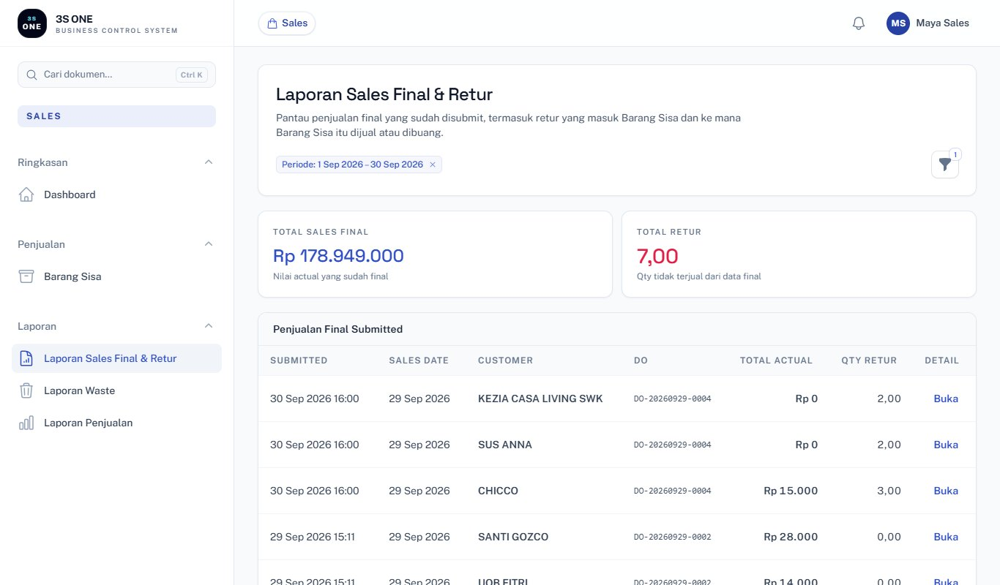
Sales › Laporan Sales Final & Retur: total penjualan final dan total retur; tombol Buka pada tiap baris menampilkan rinciannya.
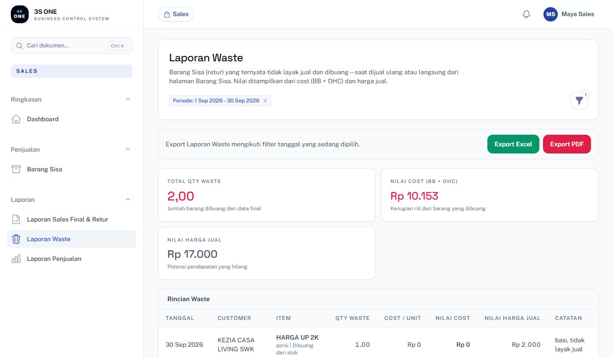
Sales › Laporan Waste: total qty dibuang, nilai cost (bahan baku + OHC), nilai harga jual yang hilang, dan rincian per tanggal dengan alasannya.
Barang Sisa di laporan keuangan
Barang Sisa dinilai sebesar HPP menunya (biaya bahan baku per porsi). Selama belum terjual atau dibuang, nilainya adalah persediaan:
- Neraca: baris Barang Sisa - Persediaan Akhir di kelompok Persediaan (klik kelompok Persediaan untuk membukanya).
- Laba Rugi: Barang Sisa Akhir mengurangi Bahan Baku Terpakai bulan ini (bahan untuk porsi yang belum laku tidak dibebankan dulu), dan Barang Sisa Awal menambah Bahan Baku Terpakai bulan berikutnya, saat porsinya terjual. Yang dibuang tampil sebagai rincian “termasuk Barang Sisa Dibuang” — klik baris Bahan Baku Terpakai untuk melihatnya (Bab 7).
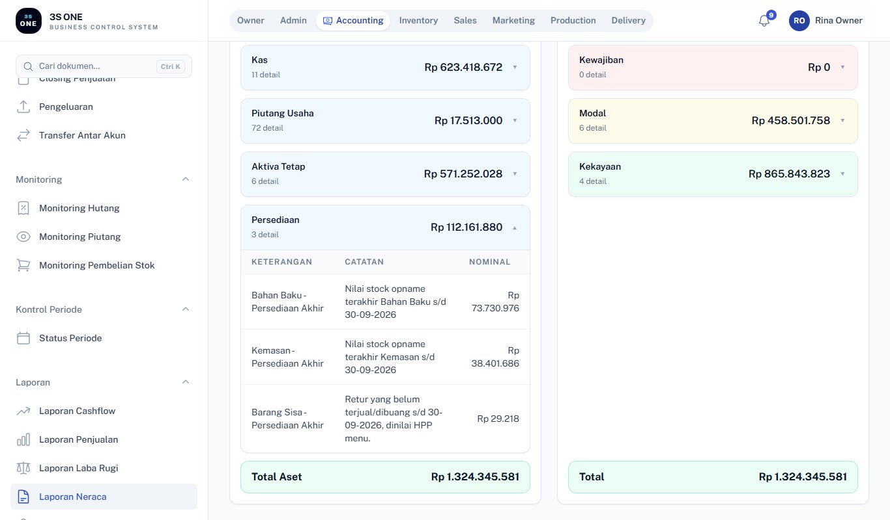
Neraca › Persediaan (dibuka): Barang Sisa - Persediaan Akhir tercatat di samping persediaan bahan baku dan kemasan, sebesar nilai HPP retur yang belum terjual/dibuang.
Laba Rugi dengan rincian dibuka: Barang Sisa Akhir di blok bahan baku — sama dengan nilai di Neraca dan di halaman Barang Sisa — dan rincian Barang Hilang, Temuan, Sisa Dibuang.
Contoh: 30 September dikirim 10 porsi nasi goreng (HPP Rp 5.000), terjual 7, retur 3. Barang Sisa akhir September Rp 15.000 — Laba September lebih tinggi Rp 15.000 dan Neraca mencatat persediaan Rp 15.000. Tanggal 1 Oktober ketiganya dijual ke customer lain Rp 12.000/porsi: penjualan Oktober Rp 36.000, dan Rp 15.000 pindah ke HPP Oktober. Jumlah laba dua bulan tetap sama; yang berubah hanya bulan tempat biayanya dicatat.
Retur sebelum tanggal yang diatur di Pengaturan Inventory (Barang Sisa dihitung sebagai persediaan mulai) tidak dinilai sebagai persediaan, supaya laporan bulan yang sudah dilaporkan tidak bergeser.
13. Aplikasi Owner
| Menu | Untuk apa |
|---|
| Dashboard | Ringkasan seluruh usaha: penjualan, kas, KPI. |
| Master User | Membuat akun, memberi peran, menonaktifkan, dan mereset password. Peran diubah di kotak Role tiap baris lalu tekan Simpan di kotak itu. Ikon di ujung baris: kunci = reset password, lingkaran coret = nonaktifkan (centang hijau = aktifkan lagi), tempat sampah = hapus. Password sementara ditampilkan sekali — sampaikan langsung ke orangnya. |
| Analisa HPP | Profit hitungan vs profit nyata per periode: Penjualan − Bahan Baku − OHC, dengan target % per bulan. |
| Audit Logs | Jejak siapa mengubah apa dan kapan (akun, pesanan, transaksi). |

Owner › Master User: peran diubah di kotak Role lalu Simpan; ikon reset password, nonaktifkan, dan hapus di ujung baris.
Peran yang tersedia di Master User
Owner, Admin, Accounting, Inventory (staf gudang), Supervisor Gudang, Sales, Marketing, Production, Delivery. Untuk menunjuk siapa yang menyetujui Form Kebutuhan, beri peran Supervisor Gudang. Apa saja yang bisa dibuka dan dikerjakan tiap peran ada di tabel Hak akses rinci per peran (Bab 2).
Pengaturan Inventory (khusus Owner)
- % OHC dan % profit bawaan untuk resep baru.
- Sumber angka HPP untuk laporan (residual opname / resep × produksi).
- Bulatkan usulan Beli ke atas (belanja per kemasan).
- Perlakuan bawaan barang ditolak (retur / dibayar), dan apakah harga beli memperbarui harga master.
- Batas bawah dan batas atas profit menu keseluruhan. Profit keseluruhan = (total harga jual − total biaya) ÷ total biaya atas semua menu aktif yang resepnya sudah bersih; sistem memeriksanya tiap pagi dan setiap ada perubahan harga, lalu mengirim lonceng hanya saat angkanya masuk atau keluar dari rentang — bukan setiap hari.
- Batas warna Susut Bahan: hijau di bawah batas pertama (bawaan 1%), merah di atas batas kedua (bawaan 10%).
- Tanggal mulai Barang Sisa dihitung sebagai persediaan (isi dengan tanggal mulai memakai fitur ini).
- Rentang bawaan laporan Menu Tidak Diproduksi (bulan).
- Awalan nomor dokumen SPK Produksi dan Form Kebutuhan.
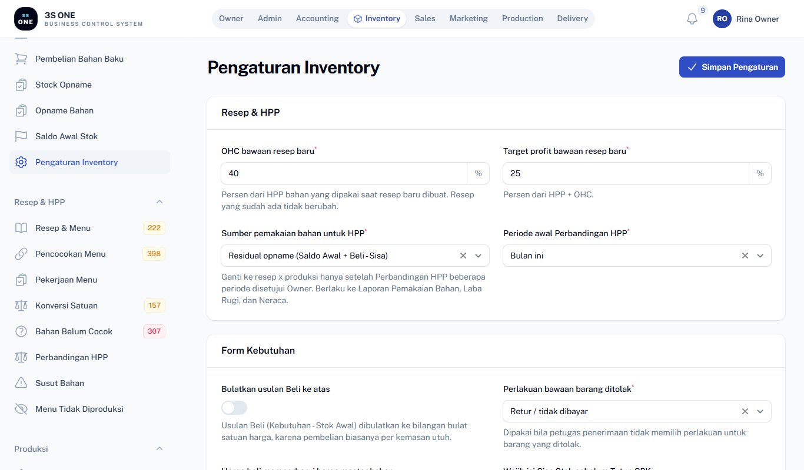
Inventory › Pengaturan Inventory (khusus Owner): angka bawaan resep, sumber HPP, aturan Form Kebutuhan, dan batas-batas lain. Tekan Simpan Pengaturan setelah mengubah.
14. Memulai dengan sistem baru: langkah demi langkah
Sistem ini baru berguna kalau datanya beres. Bab ini adalah urutan kerja yang kami sarankan: bagian A dikerjakan sekali di awal (kira-kira satu sampai dua minggu, sambil operasional jalan seperti biasa), bagian B adalah kebiasaan harian setelahnya. Kerjakan berurutan — tiap langkah memakai hasil langkah sebelumnya.
A. Persiapan sekali di awal
| # | Siapa | Apa yang dikerjakan | Tanda selesai |
|---|
| 1 | Owner | Buat akun di Owner › Master User untuk tiap orang, dengan peran yang benar: dapur = Production, staf gudang = Inventory, yang menyetujui form = Supervisor Gudang. Satu orang boleh lebih dari satu peran. Sampaikan password sementara langsung ke orangnya. | Semua orang bisa masuk dan melihat aplikasi yang sesuai bagiannya. |
| 2 | Owner | Buka Inventory › Pengaturan Inventory. Periksa angka bawaan: % OHC, % profit, perlakuan barang ditolak (retur / dibayar), batas profit menu. Kalau ragu, biarkan bawaannya — bisa diubah kapan saja. | Pengaturan tersimpan. |
| 3 | Admin | Rapikan Admin › Master Menu: nonaktifkan menu yang sudah tidak dijual, pastikan harga jual benar, dan tulis ulang SKU tiap menu yang akan tampil di website (SKU lama masih berbentuk kode seperti ALACARTE-AYAM-BISTIK). Menu yang tidak aktif tidak akan muncul di laporan mana pun. | Daftar menu aktif = menu yang benar-benar dijual sekarang. |
| 4 | Gudang | Rapikan Inventory › Item Inventaris: nama bahan, satuan beli (kg, liter, ikat, pak), harga beli terakhir, stok minimum. Hapus/nonaktifkan bahan yang tidak dipakai lagi. Satu bahan = satu baris; jangan ada "Telur" dan "Telur Ayam" berdampingan. | Setiap bahan punya satuan dan harga. |
| 5 | Gudang / Accounting | Isi Inventory › Master Supplier: nama, kontak, rekening, dan termin bayar tiap pemasok, lalu pilih bahan yang dipasoknya. Supplier yang namanya sudah tercatat di pembelian lama sudah dibuatkan otomatis — lengkapi saja datanya. | Setiap pemasok aktif ada di daftar, tanpa nama kembar. |
| 6 | Gudang | Hitung fisik semua bahan pada satu tanggal (pilih hari yang tenang), lalu masukkan ke Inventory › Saldo Awal Stok dengan tanggal itu. Inilah titik nol Kartu Stok — semua keluar-masuk setelahnya otomatis. | Kartu Stok tiap bahan menampilkan saldo awal. |
| 7 | Owner / Dapur | Buka Inventory › Pencocokan Menu. Mulai dari baris paling atas (paling laku): tautkan ke resep yang sudah ada, buat resep baru, atau tandai "Tanpa Resep". 20 menu teratas biasanya sudah mencakup dua pertiga porsi yang terjual — kerjakan itu dulu, sisanya bertahap. | Menu terlaris semuanya bertaut ke resep. |
| 8 | Dapur | Buka Inventory › Bahan Belum Cocok. Tiap nama bahan di resep yang belum terhubung ke Item Inventaris: tautkan ke bahan yang ada, buat baru, atau abaikan. Ulangi sampai daftar kosong. | Bahan Belum Cocok: 0. |
| 9 | Dapur / Gudang | Buka Inventory › Konversi Satuan › Belum Diatur. Isi aturan untuk tiap pasangan (mis. 1 kg telur = 16 butir, 1 botol kecap = 600 ml). Tanpa ini biaya baris resep dihitung nol. | Konversi Belum Diatur: 0. |
| 10 | Owner | Buka beberapa menu di Resep & Menu › Analisa HPP. Angka HPP per porsi harus masuk akal (nasi box belasan ribu, bukan ratusan ribu). Kalau aneh, hampir pasti satuannya: kembali ke langkah 9. | Kartu Profit menu keseluruhan di Dashboard Inventory menampilkan angka, bukan "–". |
| 11 | Semua | Uji coba satu SPK dari awal sampai akhir sebelum dipakai sungguhan: Admin buat SPK → dapur isi Form Kebutuhan & Ajukan → Supervisor Gudang Setujui → gudang belanja & isi Diterima/Ditolak/harga → Periksa. Lihat Kartu Stok dan Pembelian Bahan Baku ikut terisi. | Satu form berstatus Diperiksa tanpa ada yang bingung di tengah jalan. |
| 12 | Admin | Marketing › Katalog Foto Menu: unggah foto menu, mulai dari yang paling laku, lalu centang menu yang tampil di website. Boleh bertahap — foto langsung dari HP pun aman karena sistem mengecilkannya sendiri. | Filter "Belum ada foto" makin pendek tiap minggu. |
Tiga angka penanda sistem siap: Bahan Belum Cocok = 0, Konversi Belum Diatur = 0, dan kartu Profit menu keseluruhan menampilkan angka. Selama salah satu belum tercapai, laporan HPP dari resep belum bisa dipercaya — laporan lain (kas, penjualan, pengiriman) tetap berjalan normal.
Jangan menunggu semua 400-an menu selesai untuk mulai memakai Form Kebutuhan. Form Kebutuhan bekerja per SPK dan hanya membutuhkan resep menu yang ada di SPK itu. Mulailah dengan menu yang sering dimasak; menu langka menyusul.
B. Kebiasaan setelah sistem berjalan
Kalau bagian A selesai, pekerjaan harian ringan: tiap orang hanya menyentuh bagiannya, dan lonceng memberi tahu kapan gilirannya.
Setiap hari
| Siapa | Apa yang dikerjakan |
|---|
| Admin | Masukkan pesanan (PO) dan susun SPK seperti biasa. SPK Produksi di Inventory terbentuk sendiri. |
| Dapur (Production) | Buka SPK Produksi → Form Kebutuhan. Isi kolom Stok sesuai yang ada di gudang; kolom Beli terhitung sendiri. Tekan Ajukan. Bila ditolak, baca alasannya, perbaiki, Ajukan lagi. |
| Supervisor Gudang | Ada lonceng "form menunggu persetujuan": buka, periksa jumlahnya wajar, tekan Setujui — atau Tolak dengan alasan yang jelas supaya dapur tahu apa yang harus diubah. |
| Gudang / Belanja | Belanja sesuai kolom Beli. Saat barang datang, isi Diterima, Ditolak (dan perlakuannya: retur / dibayar), dan harga beli per bahan. Tekan Periksa sekali saja — setelah itu Kartu Stok, Pembelian Bahan Baku, dan kas terisi otomatis. |
| Dapur (Production) | Setelah masak, isi Sisa Stok (dan Pemakaian Aktual bila dihitung) sebelum Tutup SPK — dari sinilah Barang Hilang dan susut terlacak. |
| Sales | Isi Sales Actual; retur masuk Barang Sisa. Tawarkan Barang Sisa lewat panel Penjualan Barang Sisa di Sales Actual hari ini, dan catat yang tidak layak jual dengan Buang. |
| Accounting | Lihat Monitoring Pembelian Stok dan kas: pembelian dari form sudah masuk sebagai pengeluaran. Koreksi bila ada salah harga (lihat Bab 16). |
| Owner | Baca lonceng: perubahan harga bahan/harga jual, dan profit menu yang keluar dari batas. Tidak perlu membuka halaman apa pun kalau lonceng sepi. |
Setiap minggu
| Siapa | Apa yang dikerjakan |
|---|
| Gudang | Cek kartu Bahan di bawah stok minimum di Dashboard Inventory; sesuaikan stok minimum bila terlalu sering/jarang muncul. |
| Gudang | Opname Bahan untuk bahan yang mahal atau sering susut (ayam, daging, minyak). |
| Dapur | Lihat Bahan Belum Cocok dan Konversi Belum Diatur — resep baru sering menambah satu-dua baris. Jaga tetap 0. |
| Marketing | Tambah foto di Katalog Foto Menu dan centang menu yang tampil di website. |
Setiap bulan
| Siapa | Apa yang dikerjakan |
|---|
| Gudang | Hitung fisik dan masukkan Stock Opname pada tanggal akhir periode. |
| Owner | Buka Perbandingan HPP: HPP menurut resep × produksi vs menurut opname. Selisih besar berarti ada pemakaian yang tidak lewat form, atau resep yang takarannya sudah berbeda dengan kenyataan di dapur. |
| Owner | Buka Susut Bahan: telusuri bahan merah (klik untuk melihat SPK & menunya), dan cek sisa di Sales › Barang Sisa — yang sudah tidak layak jual dibuang sebelum tutup buku. |
| Owner | Buka Menu Tidak Diproduksi: putuskan menu yang tidak pernah dimasak 3 bulan — dihentikan, dipromosikan lagi, atau memang musiman. |
| Accounting | Tutup buku periode seperti biasa. Setelah ditutup, angka HPP dan persediaan periode itu tidak berubah lagi. |
Yang sebaiknya tidak dilakukan
- Membeli bahan di luar Form Kebutuhan tanpa mencatatnya — Kartu Stok jadi lebih kecil dari kenyataan, dan opname bulan depan akan "aneh". Kalau terpaksa, catat lewat Accounting › Pengeluaran (Pembelian Stok).
- Menekan Periksa sebelum harga beli diisi — harga itu yang jadi dasar nilai stok dan pembaruan harga master.
- Membuat bahan baru dengan nama yang mirip bahan lama (mis. "Minyak" dan "Minyak Goreng"). Cari dulu, tautkan ke yang ada.
- Mengubah satuan sebuah bahan setelah punya riwayat — buat aturan konversi, jangan ganti satuannya.
15. Kamus istilah
| Istilah | Artinya |
|---|
| PO (Purchase Order) | Pesanan pelanggan. |
| SPK | Surat Perintah Kerja: kumpulan pesanan untuk satu jadwal masak. |
| SPK Produksi | Versi SPK di Inventory: menu & jumlah yang harus dimasak, dengan form kebutuhan dan lembar kerja. |
| DO (Delivery Order) | Surat jalan pengiriman. |
| Form Kebutuhan | Daftar bahan yang dibutuhkan, stok yang ada, dan yang harus dibeli untuk satu SPK Produksi. |
| Kartu Stok | Catatan keluar-masuk tiap bahan. Sama seperti kartu stok di gudang, hanya otomatis. |
| Stock Opname | Hitung fisik stok pada tanggal tertentu. |
| HPP | Harga Pokok Produksi: biaya bahan untuk membuat satu porsi/menu. |
| OHC | Overhead Cost: biaya di luar bahan (gas, listrik, tenaga) yang ditambahkan sebagai persen dari HPP. |
| Resep / BOM | Daftar bahan dan takaran untuk satu menu. |
| Konversi satuan | Aturan mengubah satuan (butir ↔ kg, ml ↔ botol) supaya takaran resep bisa dihargai. |
| Retur | Di gudang: barang dikembalikan ke supplier, tidak dibayar. Di penjualan: porsi yang tidak terjual dari Sales Actual — masuk Barang Sisa. |
| Barang Sisa | Retur penjualan yang masih bisa dijual lagi. Dinilai sebesar HPP menu dan menjadi persediaan selama belum terjual. |
| Penjualan Barang Sisa | Baris penjualan yang mengambil dari Barang Sisa, boleh untuk customer mana pun. |
| Barang Hilang / Barang Temuan | Hitung fisik lebih sedikit / lebih banyak daripada Kartu Stok. |
| Susut | Bahan yang keluar melebihi kebutuhan resep (lebih pakai + hilang − temuan), dalam persen kebutuhan resep. |
| Opname Bahan | Hitung fisik per bahan dalam kuantitas; selisihnya menjadi Barang Hilang / Temuan. |
| Supplier / Termin bayar | Pemasok bahan. Termin bayar = jumlah hari sampai pembelian kredit jatuh tempo. |
| Chip filter | Label biru di atas tabel/laporan yang menunjukkan filter yang sedang berlaku; tanda × melepasnya. |
| Residual opname | Pemakaian bahan dihitung dari selisih: Saldo Awal + Beli − Sisa. |
| Closing / Tutup buku | Mengunci transaksi satu periode agar laporannya tidak berubah lagi. |
| Peran | Jenis pengguna yang menentukan aplikasi & tombol yang tampil. Rinciannya di Bab 2, Hak akses rinci per peran. |
16. Pertanyaan yang sering muncul
Saya tidak melihat tombol Setujui, padahal formnya sudah ada.
Tombol Setujui hanya tampil untuk Supervisor Gudang (atau Owner/Admin) dan hanya setelah produksi menekan Ajukan. Kalau status masih "Dibuat / Diisi", giliran dapur dulu.
Form ditolak supervisor. Apa yang harus saya lakukan?
Baca alasannya di kotak merah di atas tabel, perbaiki isian, Simpan, lalu Ajukan lagi. Kotak merah hilang begitu diajukan ulang.
Barang datang lebih banyak dari yang dibeli.
Diterima tidak boleh melebihi Beli. Catat kelebihannya sebagai pembelian terpisah lewat Accounting › Pengeluaran (kategori Pembelian Stok).
Saya salah isi harga beli dan sudah menekan Periksa.
Periksa tidak bisa diulang. Minta Accounting mengoreksi catatan di Pembelian Bahan Baku (nilai dan kas ikut terkoreksi), dan perbaiki harga bahan di Item Inventaris bila harga master ikut salah.
Kenapa biaya sebuah resep dihitung nol / ada peringatan merah?
Ada bahan yang belum tertaut (Bahan Belum Cocok) atau satuannya belum bisa dikonversi (Konversi Satuan › Belum Diatur). Lengkapi, dan HPP langsung terhitung.
Saya tahu nomor PO-nya, tapi tidak tahu harus membuka menu yang mana.
Pakai Cari dokumen di atas menu kiri, atau tekan Ctrl + K. Ketik nomornya lalu Enter. Kalau nomornya tidak hafal, ketik saja nama pelanggan atau nama penerimanya — PO-nya tetap ketemu.
Rekan saya menemukan sebuah dokumen lewat pencarian, saya tidak.
Itu memang perilaku yang benar. Pencarian hanya menampilkan dokumen yang boleh dibuka oleh peran Anda: Sales tidak menemukan Purchase Order, Admin tidak menemukan Delivery Order. Satu PO yang sama pun dibukakan ke halaman yang berbeda — Admin ke detail Admin App, Produksi ke halaman progres Production App. Bila Anda memang perlu aksesnya, minta Owner menyesuaikan peran Anda lewat Master User.
Menu kiri hilang waktu saya membuka Laporan Penjualan.
Itu mode Lihat Lengkap: menu kiri sengaja ditutup supaya tabel selebar layar. Tekan tombol ☰ di kiri atas untuk membukanya, atau tekan Kembali Ringkas.
Nama supplier yang saya cari tidak ada di pilihan.
Pilihan supplier hanya berisi supplier aktif di Master Supplier. Aktifkan lagi di sana, atau tambahkan supplier baru — di form pembelian ada tombol tambah langsung dari pilihan supplier, bila peran Anda boleh mengelola Inventory.
Ada chip Periode yang tidak bisa dilepas.
Itu periode bawaan halaman (biasanya bulan berjalan), bukan filter yang tertinggal. Ganti periodenya lewat ikon corong.
Retur kemarin tidak muncul di draft Sales Actual hari ini.
Sekarang retur masuk Sales › Barang Sisa, bukan dibuatkan draft otomatis. Tambahkan dari panel Penjualan Barang Sisa di Sales Actual customer yang membeli, atau lewat tombol Jual di halaman Barang Sisa.
Barang Sisa tidak bisa ditambahkan ke Sales Actual customer lain.
Sales Actual itu tidak berasal dari DO, sehingga sistem tidak tahu cara bayarnya. Tambahkan ke Sales Actual customer tersebut yang dibuat dari DO-nya.
Laba bulan ini naik, padahal banyak retur.
Retur yang belum terjual dicatat sebagai persediaan Barang Sisa, sehingga bahan bakunya belum dibebankan ke bulan ini. Biayanya pindah ke bulan saat porsinya terjual atau dibuang. Buang Barang Sisa yang memang sudah tidak layak jual supaya laporannya jujur.
Sebuah bahan merah di Susut Bahan. Apa yang harus saya lakukan?
Klik bahannya. Lihat SPK mana yang susutnya besar dan menu apa yang memakainya: resep yang takarannya tidak sesuai kenyataan (potongan, tulang, kulit), bahan yang dipakai di luar resep, atau hitungan sisa stok yang keliru. Perbaiki resepnya bila memang takarannya yang salah.
Di Laba Rugi saya tidak melihat Barang Hilang / Temuan.
Rinciannya tertutup. Klik baris Bahan Baku Terpakai (tombol Lihat rincian). Kalau tombolnya tidak ada, bulan itu memang tidak ada Barang Hilang, Temuan, maupun Barang Sisa yang dibuang.
Nilai sebuah Barang Sisa Rp 0.
Menunya belum punya HPP (biaya bahan baku per porsi). Lengkapi resepnya di Inventory › Resep & Menu atau cek Admin › Menu Tanpa HPP/OHC. Barang Sisa tanpa HPP tetap bisa dijual dan dibuang, hanya nilainya tidak ikut ke persediaan dan Laba Rugi.
Barang Sisa hilang dari daftar setelah saya tekan Jual.
Wajar: qty itu sudah dipesan untuk Sales Actual pembeli supaya tidak terjual dua kali. Kalau salah pilih, buka Sales Actual pembeli (masih draft) dan tekan Lepas dari Sales Actual ini; qty-nya kembali ke Barang Sisa.
Opname Bahan menulis “Saldo awal”, bukan Hilang/Temuan.
Bahan itu belum pernah tercatat di Kartu Stok, jadi hitungan pertama menjadi saldo awalnya. Hitungan berikutnya baru dibandingkan dan bisa menjadi Hilang atau Temuan.
Lupa password.
Minta Owner mereset lewat Master User. Anda akan mendapat password sementara dan diminta menggantinya saat masuk.
Angka di laporan Owner dan laporan Accounting berbeda?
Seharusnya tidak, karena sumbernya sama. Cek dulu apakah periode/tanggal yang dipilih sama, dan apakah periode itu sudah ditutup buku. Kalau masih berbeda, laporkan dengan menyebut menu, periode, dan versi sistem (tertera di halaman masuk).
3S ONE · Panduan Pengguna v3.1 · Dibuat dari sistem yang berjalan, bukan dari rencana — bila layar Anda berbeda dari panduan ini, kemungkinan versi sistem sudah lebih baru.